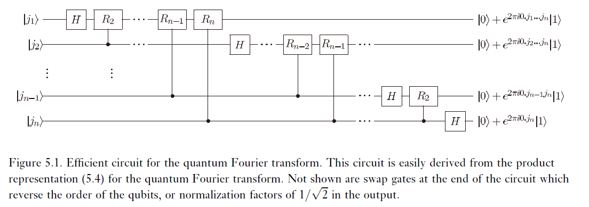
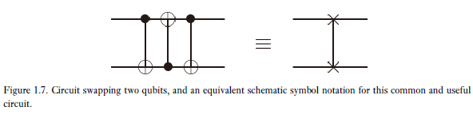
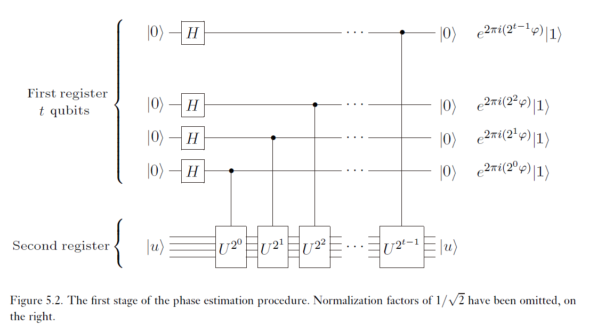
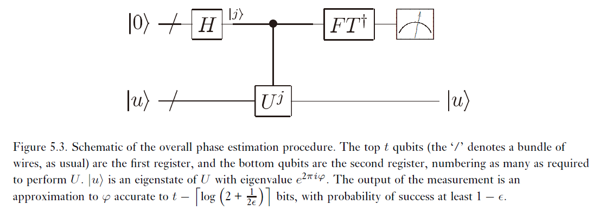
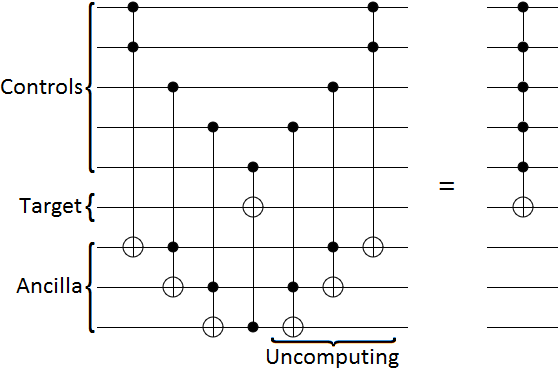

我常认为是丑女造就了美人，是愚氓举出了智者，是懦夫衬照了英雄，是众生渡化了佛祖。
# 量子 Fourier 变换及其应用# 量子 Fourier 变换
量子 Fourier 变换定义为，在一组标准正交基∣ 0 ⟩ , . . . , ∣ N − 1 ⟩ |0\rang,...,|N-1\rang ∣ 0 ⟩ , . . . , ∣ N − 1 ⟩
∣ j ⟩ → 1 N ∑ k = 0 N − 1 e 2 π i j k / N ∣ k ⟩ |j\rang\rightarrow\frac{1}{\sqrt{N}}\sum_{k=0}^{N-1}e^{2\pi ijk/N}|k\rang
∣ j ⟩ → N 1 k = 0 ∑ N − 1 e 2 π i j k / N ∣ k ⟩
等价地，对任意状态∑ j = 0 N − 1 x j ∣ j ⟩ \sum_{j=0}^{N-1}x_j|j\rang ∑ j = 0 N − 1 x j ∣ j ⟩
∑ j = 0 N − 1 x j ∣ j ⟩ → ∑ k = 0 N − 1 y k ∣ k ⟩ \sum_{j=0}^{N-1}x_j|j\rang\rightarrow\sum_{k=0}^{N-1}y_k|k\rang
j = 0 ∑ N − 1 x j ∣ j ⟩ → k = 0 ∑ N − 1 y k ∣ k ⟩
其中幅度y k y_k y k x j x_j x j
下面取N = 2 n N=2^n N = 2 n ∣ 0 ⟩ , . . . , ∣ 2 n − 1 ⟩ |0\rang,...,|2^n-1\rang ∣ 0 ⟩ , . . . , ∣ 2 n − 1 ⟩ ∣ j ⟩ = ∣ j 1 . . . j n ⟩ |j\rang=|j_1...j_n\rang ∣ j ⟩ = ∣ j 1 . . . j n ⟩ 0. j l j l + 1 . . . j m 0.j_lj_{l+1}...j_m 0 . j l j l + 1 . . . j m j l + 1 2 − 1 + . . . + j m 2 m − l + 1 j_{l+1}2^{-1}+...+j_m2^{m-l+1} j l + 1 2 − 1 + . . . + j m 2 m − l + 1
通过简单的代数运算，可给出量子 Fourier 变换有用的积形式：
∣ j 1 . . . j n ⟩ → ( ∣ 0 ⟩ + e 2 π i 0. j n ∣ 1 ⟩ ) ( ∣ 0 ⟩ + e 2 π i 0. j n − 1 j n ∣ 1 ⟩ ) . . . ( ∣ 0 ⟩ + e 2 π i 0. j 1 . . . j n ∣ 1 ⟩ ) 2 n / 2 |j_1...j_n\rang\rightarrow\\
\frac{(|0\rang+e^{2\pi i0.j_n}|1\rang)(|0\rang+e^{2\pi i0.j_{n-1}j_{n}}|1\rang)...(|0\rang+e^{2\pi i0.j_1...j_n}|1\rang)}{2^{n/2}}
∣ j 1 . . . j n ⟩ → 2 n / 2 ( ∣ 0 ⟩ + e 2 π i 0 . j n ∣ 1 ⟩ ) ( ∣ 0 ⟩ + e 2 π i 0 . j n − 1 j n ∣ 1 ⟩ ) . . . ( ∣ 0 ⟩ + e 2 π i 0 . j 1 . . . j n ∣ 1 ⟩ )
这个积形式非常有用，甚至 j 可以把它作为 Fourier 变换的定义。这个表示允许我们构造有效计算量子 Fourier 变换的一个量子线路。
积形式与之前定义的等价性可以通过简单的代数运算得到：
∣ j ⟩ → 1 2 n / 2 ∑ k = 0 2 n − 1 e 2 π i j k / 2 n ∣ k ⟩ = 1 2 n / 2 ∑ k 1 = 0 1 . . . ∑ k n = 0 1 e 2 π i j ∑ l = 1 n k l 2 − l ∣ k 1 . . . k n ⟩ = 1 2 n / 2 ∑ k 1 = 0 1 . . . ∑ k n = 0 1 ⊗ l = 1 n e 2 π i j k l 2 − l ∣ k l ⟩ = 1 2 n / 2 ⊗ l = 1 n [ ∑ k l = 0 1 e 2 π i j k l 2 − l ∣ k l ⟩ ] = 1 2 n / 2 ⊗ l = 1 n [ ∣ 0 ⟩ + e 2 π i j 2 − l ∣ 1 ⟩ ] |j\rang\rightarrow\frac{1}{2^{n/2}}\sum_{k=0}^{2^n-1}e^{2\pi ijk/2^n}|k\rang\\
=\frac{1}{2^{n/2}}\sum_{k_1=0}^1...\sum_{k_n=0}^1e^{2\pi ij\sum_{l=1}^nk_l2^{-l}}|k_1...k_n\rang\\
=\frac{1}{2^{n/2}}\sum_{k_1=0}^1...\sum_{k_n=0}^1\otimes_{l=1}^ne^{2\pi ijk_l2^{-l}}|k_l\rang\\
=\frac{1}{2^{n/2}}\otimes_{l=1}^n[\sum_{k_l=0}^1e^{2\pi ijk_l2^{-l}}|k_l\rang]\\
=\frac{1}{2^{n/2}}\otimes_{l=1}^n[|0\rang+e^{2\pi ij2^{-l}}|1\rang]
∣ j ⟩ → 2 n / 2 1 k = 0 ∑ 2 n − 1 e 2 π i j k / 2 n ∣ k ⟩ = 2 n / 2 1 k 1 = 0 ∑ 1 . . . k n = 0 ∑ 1 e 2 π i j ∑ l = 1 n k l 2 − l ∣ k 1 . . . k n ⟩ = 2 n / 2 1 k 1 = 0 ∑ 1 . . . k n = 0 ∑ 1 ⊗ l = 1 n e 2 π i j k l 2 − l ∣ k l ⟩ = 2 n / 2 1 ⊗ l = 1 n [ k l = 0 ∑ 1 e 2 π i j k l 2 − l ∣ k l ⟩ ] = 2 n / 2 1 ⊗ l = 1 n [ ∣ 0 ⟩ + e 2 π i j 2 − l ∣ 1 ⟩ ]
其中倒数第二步实际上就是个拆括号，把张量积换成乘法就很好理解。
积形式给出了一个很好的线路。若R k = ( 1 0 0 e 2 π i / 2 k ) R_k=\begin{pmatrix}1&0\\0&e^{2\pi i/2^k}\end{pmatrix} R k = ( 1 0 0 e 2 π i / 2 k ) ∣ j 1 . . . j n ⟩ |j_1...j_n\rang ∣ j 1 . . . j n ⟩

简单解释下，Hadamard 门应用到第一量子比特产生状态：
1 2 1 / 2 ( ∣ 0 ⟩ + e 2 π i 0. j 1 ∣ 1 ⟩ ) ∣ j 2 . . . j n ⟩ \frac{1}{2^{1/2}}(|0\rang+e^{2\pi i0.j_1}|1\rang)|j_2...j_n\rang
2 1 / 2 1 ( ∣ 0 ⟩ + e 2 π i 0 . j 1 ∣ 1 ⟩ ) ∣ j 2 . . . j n ⟩
应用受控门R 2 R_2 R 2
1 2 1 / 2 ( ∣ 0 ⟩ + e 2 π i 0. j 1 j 2 ∣ 1 ⟩ ) ∣ j 2 . . . j n ⟩ \frac{1}{2^{1/2}}(|0\rang+e^{2\pi i0.j_1j_2}|1\rang)|j_2...j_n\rang
2 1 / 2 1 ( ∣ 0 ⟩ + e 2 π i 0 . j 1 j 2 ∣ 1 ⟩ ) ∣ j 2 . . . j n ⟩
之所以是受控，因为R 2 R_2 R 2 ∣ 1 ⟩ |1\rang ∣ 1 ⟩ j 2 = 1 j_2=1 j 2 = 1 R 2 R_2 R 2 e 2 π i j 2 / 2 2 e^{2\pi ij_2/2^2} e 2 π i j 2 / 2 2 R 3 , . . . R n R_3,...R_n R 3 , . . . R n
1 2 1 / 2 ( ∣ 0 ⟩ + e 2 π i 0. j 1 . . . j n ∣ 1 ⟩ ) ∣ j 2 . . . j n ⟩ \frac{1}{2^{1/2}}(|0\rang+e^{2\pi i0.j_1...j_n}|1\rang)|j_2...j_n\rang
2 1 / 2 1 ( ∣ 0 ⟩ + e 2 π i 0 . j 1 . . . j n ∣ 1 ⟩ ) ∣ j 2 . . . j n ⟩
然后运用交换量子比特线路（图中为了简洁没给出）：

即可得出最终需要的状态。
这也可以证明 Fourier 变换是酉的，因为线路中每个门都是酉的。
完成一个 n 个量子比特的 Fourier 变换需要的门数为
n + ( n − 1 ) + . . . + 1 = n ( n + 1 ) 2 n+(n-1)+...+1=\frac{n(n+1)}{2}
n + ( n − 1 ) + . . . + 1 = 2 n ( n + 1 )
再加上交换须要的门（n 线性个），故这个线路提供了一个 Fourier 变换的Θ ( n 2 ) \varTheta(n^2) Θ ( n 2 ) 2 n 2^n 2 n Θ ( 2 n l o g ( 2 n ) ) \varTheta(2^nlog(2^n)) Θ ( 2 n l o g ( 2 n ) )
首先对于一个函数f:\Z_N\longmapsto \C，满足∑ x = 0 N − 1 ∣ f ( x ) ∣ 2 = N \sum_{x=0}^{N-1}|f(x)|^2=N ∑ x = 0 N − 1 ∣ f ( x ) ∣ 2 = N 我们都可以用一个状态向量来表示这个函数信息 ，即：∣ f ⟩ = 1 N ( f ( 0 ) f ( 1 ) . . . f ( N − 1 ) ) = 1 N ∑ x = 0 N − 1 f ( x ) ∣ x ⟩ |f\rang=\frac{1}{\sqrt{N}}\begin{pmatrix}f(0)\\f(1)\\...\\f(N-1)\end{pmatrix}=\frac{1}{\sqrt{N}}\sum_{x=0}^{N-1}f(x)|x\rang
∣ f ⟩ = N 1 ⎝ ⎜ ⎜ ⎜ ⎛ f ( 0 ) f ( 1 ) . . . f ( N − 1 ) ⎠ ⎟ ⎟ ⎟ ⎞ = N 1 x = 0 ∑ N − 1 f ( x ) ∣ x ⟩
所以Q F T ∣ f ⟩ = 1 N ∑ x = 0 N − 1 ∑ y = 0 N − 1 e 2 π i x y / N f ( x ) ∣ y ⟩ QFT|f\rang=\frac{1}{N}\sum_{x=0}^{N-1}\sum_{y=0}^{N-1}e^{2\pi ixy/N}f(x)|y\rang
Q F T ∣ f ⟩ = N 1 x = 0 ∑ N − 1 y = 0 ∑ N − 1 e 2 π i x y / N f ( x ) ∣ y ⟩
而记f ^ ( x ) = ∑ l = 0 N − 1 e 2 π i l x / N f ( l ) \hat{f}(x)=\sum_{l=0}^{N-1}e^{2\pi ilx/N}f(l) f ^ ( x ) = ∑ l = 0 N − 1 e 2 π i l x / N f ( l ) Q F T ∣ f ⟩ = 1 N ∑ y = 0 N − 1 f ^ ( y ) ∣ y ⟩ = ∣ f ^ ⟩ QFT|f\rang=\frac{1}{\sqrt{N}}\sum_{y=0}^{N-1}\hat{f}(y)|y\rang=|\hat{f}\rang
Q F T ∣ f ⟩ = N 1 y = 0 ∑ N − 1 f ^ ( y ) ∣ y ⟩ = ∣ f ^ ⟩
这就是默认记号的函数状态下的 Fourier 变换
# 相位估计
Fourier 变换是称为相位估计（phase estimation）的一般过程的关键，而相位估计又是许多量子算法的关键。设酉算子U U U e 2 π i φ e^{2\pi i\varphi} e 2 π i φ ∣ u ⟩ |u\rang ∣ u ⟩ φ \varphi φ φ \varphi φ
量子相位估计使用两个寄存器。第一个寄存器包含初态都为∣ 0 ⟩ |0\rang ∣ 0 ⟩ φ \varphi φ ∣ u ⟩ |u\rang ∣ u ⟩ ∣ u ⟩ |u\rang ∣ u ⟩
相位估计分三个阶段。首先，应用下图线路：

简单解释下。首先，图右侧省去了归一化常数1 2 \frac{1}{\sqrt{2}} 2 1 ∣ 0 ⟩ |0\rang ∣ 0 ⟩ e 2 π i φ ∣ 1 ⟩ e^{2\pi i\varphi}|1\rang e 2 π i φ ∣ 1 ⟩ U 2 t U^{2^t} U 2 t U U U 2 t 2^t 2 t ∣ u ⟩ |u\rang ∣ u ⟩ U U U e 2 π i φ e^{2\pi i\varphi} e 2 π i φ U U U ∣ u ⟩ |u\rang ∣ u ⟩
相位估计的第二阶段是应用逆 Fourier 变换到第一寄存器（可在Θ ( t 2 ) \varTheta(t^2) Θ ( t 2 )
相位估计的最后阶段是通过在计算基种测量读出第一寄存器的状态。
相位估计的全过程由下图线路给出：

下面来验证这个线路为什么可以实现相位估计的效果。我们并不关心φ \varphi φ e 2 π i e^{2\pi i} e 2 π i φ \varphi φ φ = 0. φ 1 . . . φ t \varphi=0.\varphi_1...\varphi_t φ = 0 . φ 1 . . . φ t φ \varphi φ φ \varphi φ 2 t − 1 φ 2^{t-1}\varphi 2 t − 1 φ
1 2 t / 2 ( ∣ 0 ⟩ + e 2 π i 0. φ t ∣ 1 ⟩ ) ( ∣ 0 ⟩ + e 2 π i 0. φ t − 1 φ ∣ 1 ⟩ ) . . . ( ∣ 0 ⟩ + e 2 π i 0. φ 1 . . . φ t ∣ 1 ⟩ ) \frac{1}{2^{t/2}}(|0\rang+e^{2\pi i0.\varphi_t}|1\rang)(|0\rang+e^{2\pi i0.\varphi_{t-1}\varphi}|1\rang)...(|0\rang+e^{2\pi i0.\varphi_1...\varphi_t}|1\rang)
2 t / 2 1 ( ∣ 0 ⟩ + e 2 π i 0 . φ t ∣ 1 ⟩ ) ( ∣ 0 ⟩ + e 2 π i 0 . φ t − 1 φ ∣ 1 ⟩ ) . . . ( ∣ 0 ⟩ + e 2 π i 0 . φ 1 . . . φ t ∣ 1 ⟩ )
相位估计第二阶段是应用逆 Fourier 变换，通过比较之前的 Fourier 变换积形式，我们发现上式和∣ φ 1 . . . φ t ⟩ |\varphi_1...\varphi_t\rang ∣ φ 1 . . . φ t ⟩ ∣ φ 1 . . . φ t ⟩ |\varphi_1...\varphi_t\rang ∣ φ 1 . . . φ t ⟩ ( φ 1 . . . φ t ) 2 (\varphi_1...\varphi_t)_2 ( φ 1 . . . φ t ) 2 φ \varphi φ
但当φ \varphi φ b b b [ 0 , 2 t ) [0,2^t) [ 0 , 2 t ) b / 2 t = 0. b 1 . . . b t b/2^t=0.b_1...b_t b / 2 t = 0 . b 1 . . . b t b b b φ \varphi φ φ \varphi φ
0 ≤ φ − b / 2 t ≤ 2 − t 0\leq \varphi-b/2^t\leq 2^{-t} 0 ≤ φ − b / 2 t ≤ 2 − t φ \varphi φ
第一寄存器输出结果为：
1 2 t / 2 ( ∣ 0 ⟩ + e 2 π i φ 2 t − 1 ∣ 1 ⟩ ) ( ∣ 0 ⟩ + e 2 π i φ 2 t − 2 ∣ 1 ⟩ ) . . . ( ∣ 0 ⟩ + e 2 π i φ 2 0 ∣ 1 ⟩ ) = 1 2 t / 2 ∑ k = 0 2 t − 1 e 2 π i φ k ∣ k ⟩ \frac{1}{2^{t/2}}(|0\rang+e^{2\pi i\varphi 2^{t-1}}|1\rang)(|0\rang+e^{2\pi i\varphi 2^{t-2}}|1\rang)...(|0\rang+e^{2\pi i\varphi 2^0}|1\rang)=\frac{1}{2^{t/2}}\sum_{k=0}^{2^t-1}e^{2\pi i\varphi k}|k\rang
2 t / 2 1 ( ∣ 0 ⟩ + e 2 π i φ 2 t − 1 ∣ 1 ⟩ ) ( ∣ 0 ⟩ + e 2 π i φ 2 t − 2 ∣ 1 ⟩ ) . . . ( ∣ 0 ⟩ + e 2 π i φ 2 0 ∣ 1 ⟩ ) = 2 t / 2 1 k = 0 ∑ 2 t − 1 e 2 π i φ k ∣ k ⟩
这个结果是一个叠加态，因此计算基测量结果一定是以不同概率得到不同的结果，实际上我们就在证明测量结果大概率离 b 很近。
对这个结果进行逆 Fourier 变换（即对每一个∣ k ⟩ |k\rang ∣ k ⟩
1 2 t ∑ k , l = 0 2 t − 1 e − 2 π i k l 2 t e 2 π i φ k ∣ l ⟩ \frac{1}{2^t}\sum_{k,l=0}^{2^t-1}e^{\frac{-2\pi ikl}{2^t}}e^{2\pi i\varphi k}|l\rang
2 t 1 k , l = 0 ∑ 2 t − 1 e 2 t − 2 π i k l e 2 π i φ k ∣ l ⟩
记a l a_l a l ∣ l ⟩ |l\rang ∣ l ⟩
a l = 1 2 t ∑ k = 0 2 t − 1 ( e 2 π i ( φ − l / 2 t ) ) k a ( b + l ) m o d 2 t = 1 2 t ∑ k = 0 2 t − 1 ( e 2 π i ( φ − ( b + l ) / 2 t ) ) k = 1 2 t ( 1 − e 2 π i ( 2 t φ − ( b + l ) ) 1 − e 2 π i ( φ − ( b + l ) / 2 t ) ) a_l=\frac{1}{2^t}\sum_{k=0}^{2^t-1}(e^{2\pi i(\varphi-l/2^t)})^k\\
a_{(b+l)mod2^t}=\frac{1}{2^t}\sum_{k=0}^{2^t-1}(e^{2\pi i(\varphi-(b+l)/2^t)})^k\\
=\frac{1}{2^t}(\frac{1-e^{2\pi i(2^t\varphi-(b+l))}}{1-e^{2\pi i(\varphi-(b+l)/2^t)}})
a l = 2 t 1 k = 0 ∑ 2 t − 1 ( e 2 π i ( φ − l / 2 t ) ) k a ( b + l ) m o d 2 t = 2 t 1 k = 0 ∑ 2 t − 1 ( e 2 π i ( φ − ( b + l ) / 2 t ) ) k = 2 t 1 ( 1 − e 2 π i ( φ − ( b + l ) / 2 t ) 1 − e 2 π i ( 2 t φ − ( b + l ) ) )
记\delta=\varphi-b/2^t\Rightarrow 0\leq\delta\leq2^
a ( b + l ) m o d 2 t = 1 2 t ( 1 − e 2 π i ( 2 t δ − l ) 1 − e 2 π i ( δ − l / 2 t ) ) a_{(b+l)mod2^t}=\frac{1}{2^t}(\frac{1-e^{2\pi i(2^t\delta-l)}}{1-e^{2\pi i(\delta-l/2^t)}})
a ( b + l ) m o d 2 t = 2 t 1 ( 1 − e 2 π i ( δ − l / 2 t ) 1 − e 2 π i ( 2 t δ − l ) )
这里需要理解清除一个东西。相位估计第三阶段对第一寄存器进行测量时，得到的结果显然不一定（以一定概率）得到 b。记得到的结果是 m，我们证明 m 和 b 偏离很远的概率很小。令s = ( b + l ) m o d 2 t s=(b+l)mod2^t s = ( b + l ) m o d 2 t ∣ s − b ∣ > ϵ ⇔ ∣ l ∣ > ϵ |s-b|>\epsilon\Leftrightarrow |l|>\epsilon ∣ s − b ∣ > ϵ ⇔ ∣ l ∣ > ϵ
p ( ∣ m − b ∣ > ϵ ) = ∑ s ∈ [ 0 , 2 t ) , ∣ s − b ∣ > ϵ ∣ a s ∣ 2 = ∑ l ∈ [ 0 , 2 t ) , ∣ l ∣ > ϵ ∣ a ( l + b ) m o d 2 t ∣ 2 p(|m-b|>\epsilon)=\sum_{s\in[0,2^t),|s-b|>\epsilon}|a_s|^2=\sum_{l\in[0,2^t),|l|>\epsilon}|a_{(l+b)mod2^t}|^2
p ( ∣ m − b ∣ > ϵ ) = s ∈ [ 0 , 2 t ) , ∣ s − b ∣ > ϵ ∑ ∣ a s ∣ 2 = l ∈ [ 0 , 2 t ) , ∣ l ∣ > ϵ ∑ ∣ a ( l + b ) m o d 2 t ∣ 2
因为对任意实数，有∣ 1 − e i θ ∣ ≤ 2 |1-e^{i\theta}|\leq 2 ∣ 1 − e i θ ∣ ≤ 2
∣ a ( l + b ) m o d 2 t ∣ ≤ 2 2 t ∣ 1 − e 2 π i ( δ − l / 2 t ) ∣ |a_{(l+b)mod2^t}|\leq \frac{2}{2^t|1-e^{2\pi i(\delta - l/2^t)}|}
∣ a ( l + b ) m o d 2 t ∣ ≤ 2 t ∣ 1 − e 2 π i ( δ − l / 2 t ) ∣ 2
而因为0 ≤ δ ≤ 2 − t , 0 ≤ l < 2 t 0\leq\delta\leq 2^{-t},0\leq l<2^t 0 ≤ δ ≤ 2 − t , 0 ≤ l < 2 t 2 π ( δ − l / 2 t ) ∈ [ − π , π ] 2\pi (\delta-l/2^t)\in[-\pi,\pi] 2 π ( δ − l / 2 t ) ∈ [ − π , π ] ∣ 1 − e i θ ∣ ≥ 2 ∣ θ ∣ / π , θ ∈ [ − π , π ] |1-e^{i\theta}|\geq 2|\theta|/\pi,\theta\in[-\pi,\pi] ∣ 1 − e i θ ∣ ≥ 2 ∣ θ ∣ / π , θ ∈ [ − π , π ]
∣ a ( l + b ) m o d 2 t ∣ ≤ π 2 t 2 π ∣ δ − l / 2 t ∣ = 1 2 ∣ 2 t δ − l ∣ |a_{(l+b)mod2^t}|\leq\frac{\pi}{2^t2\pi|\delta-l/2^t|}=\frac{1}{2|2^t\delta-l|}
∣ a ( l + b ) m o d 2 t ∣ ≤ 2 t 2 π ∣ δ − l / 2 t ∣ π = 2 ∣ 2 t δ − l ∣ 1
因此:
p ( ∣ m − b ∣ > ϵ ) ≤ 1 4 ∑ l = ϵ + 1 2 t − 1 1 ( 2 t δ − l ) 2 p(|m-b|>\epsilon)\leq\frac{1}{4}\sum_{l=\epsilon+1}^{2^t-1}\frac{1}{(2^t\delta-l)^2}
p ( ∣ m − b ∣ > ϵ ) ≤ 4 1 l = ϵ + 1 ∑ 2 t − 1 ( 2 t δ − l ) 2 1
又因为0 ≤ 2 t δ ≤ 1 , l > 1 0\leq2^t\delta\leq 1,l>1 0 ≤ 2 t δ ≤ 1 , l > 1
p ( ∣ m − b ∣ > ϵ ) ≤ 1 4 ∑ l = ϵ + 1 2 t − 1 1 ( l − 1 ) 2 < 1 4 ∫ ϵ − 1 2 t − 1 1 l 2 d l < m i n ( 1 4 ϵ , 1 ) p(|m-b|>\epsilon)\leq\frac{1}{4}\sum_{l=\epsilon+1}^{2^t-1}\frac{1}{(l-1)^2}<\frac{1}{4}\int_{\epsilon-1}^{2^t-1}\frac{1}{l^2}dl<min(\frac{1}{4\epsilon},1)
p ( ∣ m − b ∣ > ϵ ) ≤ 4 1 l = ϵ + 1 ∑ 2 t − 1 ( l − 1 ) 2 1 < 4 1 ∫ ϵ − 1 2 t − 1 l 2 1 d l < m i n ( 4 ϵ 1 , 1 )
事实上这和书上就差了些，不过不影响，而且我觉得书上写的很奇怪。因此
p ( ∣ m − b ∣ < ϵ ) ≥ m a x ( 0 , 1 − 1 4 ( ϵ − 1 ) ) p(|m-b|<\epsilon)\geq max(0,1-\frac{1}{4(\epsilon-1)})
p ( ∣ m − b ∣ < ϵ ) ≥ m a x ( 0 , 1 − 4 ( ϵ − 1 ) 1 )
再重新回去考虑 b 的意义：b 是一个 t 位二进制数，表示φ \varphi φ φ \varphi φ ϵ = 2 t − n \epsilon=2^{t-n} ϵ = 2 t − n φ \varphi φ 1 − 1 2 t − n + 2 1-\frac{1}{2^{t-n+2}} 1 − 2 t − n + 2 1
跟书上不太一样，书上看不懂。但是结果之间量级一样差一点常数吧。
为了使用相位估算算法，需要制备 U 的本征态∣ u ⟩ |u\rang ∣ u ⟩ ∣ ψ ⟩ = ∑ u C u ∣ u ⟩ |\psi\rang=\sum_u C_u|u\rang ∣ ψ ⟩ = ∑ u C u ∣ u ⟩ ∣ u ⟩ |u\rang ∣ u ⟩ e 2 π i φ u e^{2\pi i\varphi_u} e 2 π i φ u ∑ u C u ∣ φ u ~ ⟩ ∣ u ⟩ \sum_uC_u|\tilde{\varphi_u}\rang|u\rang ∑ u C u ∣ φ u ~ ⟩ ∣ u ⟩ φ u ~ \tilde{\varphi_u} φ u ~ φ u \varphi_u φ u
相位估计很好地解决了给出酉算子 U 和其一个特征向量，估计其对于特征值的问题。因为酉算子特征值模为 1 一定是e i θ e^{i\theta} e i θ
# 相位估计应用# 求阶
对于满足 x<N，且无公因子的正整数 x 和 N，x 模 N 的阶定义为最小正整数 r，使得x r ≡ 1 ( m o d e N ) x^r\equiv1(modeN) x r ≡ 1 ( m o d e N ) L = l o g ( N ) L=log(N) L = l o g ( N )
求阶的量子算法恰好是把相位估计算法应用到酉算子
U ∣ y ⟩ ≡ ∣ x y m o d N ⟩ U|y\rang\equiv|xy\;mod\;N\rang
U ∣ y ⟩ ≡ ∣ x y m o d N ⟩
其中，y = { 0 , 1 } × { 0 , 1 } × . . . = { 0 , 1 } L y=\{0,1\}\times\{0,1\}\times...=\{0,1\}^L y = { 0 , 1 } × { 0 , 1 } × . . . = { 0 , 1 } L
∣ u s ⟩ = 1 r ∑ k = 0 r − 1 e x p ( − 2 π i s k r ) ∣ x k m o d N ⟩ 0 ≤ s ≤ r − 1 |u_s\rang=\frac{1}{\sqrt{r}}\sum_{k=0}^{r-1}exp(\frac{-2\pi isk}{r})|x^kmod\;N\rang\\
0\leq s\leq r-1
∣ u s ⟩ = r 1 k = 0 ∑ r − 1 e x p ( r − 2 π i s k ) ∣ x k m o d N ⟩ 0 ≤ s ≤ r − 1
其实这个状态是 U 的本征态，因为 (x r = 1 m o d N x^r=1modN x r = 1 m o d N
U ∣ u s ⟩ = 1 r ∑ k = 0 r − 1 e x p ( − 2 π i s k r ) ∣ x k + 1 m o d N ⟩ = e x p ( 2 π i s r ) 1 r ∑ k = 1 r e x p ( − 2 π i s k r ) ∣ x k m o d N ⟩ = e x p ( 2 π i s r ) 1 r ∑ k = 1 r − 1 e x p ( − 2 π i s k r ) ∣ x k m o d N ⟩ + e x p ( 2 π i s r ) 1 r e x p ( − 2 π i s ) ∣ 1 ⟩ = e x p ( 2 π i s r ) 1 r ∑ k = 1 r − 1 e x p ( − 2 π i s k r ) ∣ x k m o d N ⟩ + e x p ( 2 π i s r ) 1 r ∣ 1 ⟩ = e x p ( 2 π i s r ) 1 r ∑ k = 0 r − 1 e x p ( − 2 π i s k r ) ∣ x k m o d N ⟩ = e x p ( 2 π i s r ) ∣ u s ⟩ U|u_s\rang=\frac{1}{\sqrt{r}}\sum_{k=0}^{r-1}exp(\frac{-2\pi isk}{r})|x^{k+1}mod\; N\rang\\
=exp(\frac{2\pi is}{r})\frac{1}{\sqrt{r}}\sum_{k=1}^{r} exp(\frac{-2\pi isk}{r})|x^kmod\; N\rang\\
=exp(\frac{2\pi is}{r})\frac{1}{\sqrt{r}}\sum_{k=1}^{r-1}exp(\frac{-2\pi isk}{r})|x^kmod\; N\rang+exp(\frac{2\pi is}{r})\frac{1}{\sqrt{r}}exp(-2\pi is)|1\rang\\
=exp(\frac{2\pi is}{r})\frac{1}{\sqrt{r}}\sum_{k=1}^{r-1}exp(\frac{-2\pi isk}{r})|x^kmod\; N\rang+exp(\frac{2\pi is}{r})\frac{1}{\sqrt{r}}|1\rang\\
=exp(\frac{2\pi is}{r})\frac{1}{\sqrt{r}}\sum_{k=0}^{r-1}exp(\frac{-2\pi isk}{r})|x^kmod\; N\rang\\
=exp(\frac{2\pi is}{r})|u_s\rang
U ∣ u s ⟩ = r 1 k = 0 ∑ r − 1 e x p ( r − 2 π i s k ) ∣ x k + 1 m o d N ⟩ = e x p ( r 2 π i s ) r 1 k = 1 ∑ r e x p ( r − 2 π i s k ) ∣ x k m o d N ⟩ = e x p ( r 2 π i s ) r 1 k = 1 ∑ r − 1 e x p ( r − 2 π i s k ) ∣ x k m o d N ⟩ + e x p ( r 2 π i s ) r 1 e x p ( − 2 π i s ) ∣ 1 ⟩ = e x p ( r 2 π i s ) r 1 k = 1 ∑ r − 1 e x p ( r − 2 π i s k ) ∣ x k m o d N ⟩ + e x p ( r 2 π i s ) r 1 ∣ 1 ⟩ = e x p ( r 2 π i s ) r 1 k = 0 ∑ r − 1 e x p ( r − 2 π i s k ) ∣ x k m o d N ⟩ = e x p ( r 2 π i s ) ∣ u s ⟩
注意到上面的讨论∣ u s ⟩ ∈ S p a n { ∣ 0 ⟩ , . . . , ∣ N − 1 ⟩ } |u_s\rang\in Span\{|0\rang,...,|N-1\rang\} ∣ u s ⟩ ∈ S p a n { ∣ 0 ⟩ , . . . , ∣ N − 1 ⟩ } 2 L × 2 L 2^L\times 2^L 2 L × 2 L N ≤ y ≤ 2 L − 1 N\leq y\leq 2^L-1 N ≤ y ≤ 2 L − 1 U ∣ y ⟩ = ∣ y ⟩ U|y\rang=|y\rang U ∣ y ⟩ = ∣ y ⟩ S p a n { ∣ 0 ⟩ , . . . , ∣ N − 1 ⟩ } Span\{|0\rang,...,|N-1\rang\} S p a n { ∣ 0 ⟩ , . . . , ∣ N − 1 ⟩ }
利用相位估计，使我们以高精度得到对应的特征值e ( 2 π i s / r ) e^{(2\pi is/r)} e ( 2 π i s / r )
引用相位估计过程由两个重要要求：
必须有对任意整数 k 实现受控U 2 j U^{2^j} U 2 j
必须能够有效制备具有不平凡特征值的特征向量∣ u s ⟩ |u_s\rang ∣ u s ⟩
第一个要求 可以用称为 ** 求模幂（modular expoentiation）** 的过程来满足，用这个过程我们能够实现整个受控U 2 j U^{2^j} U 2 j O ( L 3 ) O(L^3) O ( L 3 )
求模幂：
我们希望计算变换：
∣ z ⟩ ∣ y ⟩ → ∣ z ⟩ U z t 2 t − 1 . . . U z 1 2 0 ∣ y ⟩ = ∣ z ⟩ ∣ x z y ( m o d N ) ⟩ |z\rang|y\rang\rightarrow|z\rang U^{z_t2^{t-1}}...U^{z_12^0}|y\rang=|z\rang|x^zy(modN)\rang
∣ z ⟩ ∣ y ⟩ → ∣ z ⟩ U z t 2 t − 1 . . . U z 1 2 0 ∣ y ⟩ = ∣ z ⟩ ∣ x z y ( m o d N ) ⟩
所以一系列受控U 2 j U^{2^j} U 2 j
此时我们的想法是先引入第三计算器计算∣ x z m o d N ⟩ |x^zmodN\rang ∣ x z m o d N ⟩
首先引入第三寄存器初始状态∣ x ⟩ ∣ 1 ⟩ |x\rang|1\rang ∣ x ⟩ ∣ 1 ⟩ ∣ a ⟩ ∣ b ⟩ → ∣ a ⟩ ∣ a ⋅ b ⟩ |a\rang|b\rang\rightarrow|a\rang|a\cdot b\rang ∣ a ⟩ ∣ b ⟩ → ∣ a ⟩ ∣ a ⋅ b ⟩ O ( l o g ( a ) l o g ( b ) ) O(log(a)log(b)) O ( l o g ( a ) l o g ( b ) ) O ( l o g 2 ( x ) ) O(log^2(x)) O ( l o g 2 ( x ) )
具体实现也需要考虑下第三寄存器里乘法的实现，应该需要引入一些辅助量子比特，但应该是O ( l o g ( x ) ) O(log(x)) O ( l o g ( x ) ) O ( l o g 3 ( x ) ) O(log^3(x)) O ( l o g 3 ( x ) )
然后把第三寄存器得出的x z m o d N x^zmodN x z m o d N

但实际实现过程还需要很多细节的考虑。总之显然这通过引入不多的量子比特和计算门就是可以实现的（O ( l o g 3 ( x ) ) O(log^3(x)) O ( l o g 3 ( x ) )
实践中，练习给出了我认为更好的一个做法。把第二寄存器初始化为∣ 0 ⟩ |0\rang ∣ 0 ⟩ U j : U j ∣ x ⟩ = ∣ x j m o d N ⟩ U^j:U^j|x\rang=|x^jmodN\rang U j : U j ∣ x ⟩ = ∣ x j m o d N ⟩
V : V ∣ j ⟩ ∣ k ⟩ = ∣ j ⟩ ∣ k + x j m o d N ⟩ V:V|j\rang|k\rang=|j\rang|k+x^jmodN\rang
V : V ∣ j ⟩ ∣ k ⟩ = ∣ j ⟩ ∣ k + x j m o d N ⟩
这样操作得出的输出结果是一样的，复杂度也没变，V 也很好构造出来。但是感觉实现起来少了些细节吧不知道（x。
第二个要求 需要一定技巧，因为在制备∣ u s ⟩ |u_s\rang ∣ u s ⟩
1 r ∑ s = 0 r − 1 ∣ u s ⟩ = ∣ 0...01 ⟩ \frac{1}{\sqrt{r}}\sum_{s=0}^{r-1}|u_s\rang=|0...01\rang
r 1 s = 0 ∑ r − 1 ∣ u s ⟩ = ∣ 0 . . . 0 1 ⟩
所以如果第二寄存器的输入为∣ 0...01 ⟩ |0...01\rang ∣ 0 . . . 0 1 ⟩
1 2 t / 2 [ ∣ 0 ⟩ + ∣ 1 ⟩ ] . . . [ ∣ 0 ⟩ + ∣ 1 ⟩ ] ∣ 1 ⟩ = 1 2 t / 2 [ ∣ 0 ⟩ + ∣ 1 ⟩ ] . . . [ ∣ 0 ⟩ + ∣ 1 ⟩ ] ∑ s = 0 r − 1 1 r ∣ u s ⟩ = ∑ s = 0 r − 1 1 r 1 2 t / 2 [ ∣ 0 ⟩ + ∣ 1 ⟩ ] . . . [ ∣ 0 ⟩ + ∣ 1 ⟩ ] ∣ u s ⟩ → ∑ s = 0 r − 1 1 r 1 2 t / 2 [ ∣ 0 ⟩ + e 2 π i 2 t − 1 s / r ∣ 1 ⟩ ] . . . [ ∣ 0 ⟩ + e 2 π i 2 0 s / r ∣ 1 ⟩ ] ∣ u s ⟩ → ∑ s = 0 r − 1 1 r F T ⊺ { 1 2 t / 2 [ ∣ 0 ⟩ + e 2 π i 2 t − 1 s / r ∣ 1 ⟩ ] . . . [ ∣ 0 ⟩ + e 2 π i 2 0 s / r ∣ 1 ⟩ ] } ∣ u s ⟩ ( 记 s / r = φ s = 0. φ s 1 . . . φ s t ) = ∑ s = 0 r − 1 1 r ∣ φ s 1 . . . φ s t ⟩ ∣ u s ⟩ \frac{1}{2^{t/2}}[|0\rang+|1\rang]...[|0\rang+|1\rang]|1\rang=\frac{1}{2^{t/2}}[|0\rang+|1\rang]...[|0\rang+|1\rang]\sum_{s=0}^{r-1}\frac{1}{\sqrt{r}}|u_s\rang\\
=\sum_{s=0}^{r-1}\frac{1}{\sqrt{r}}\frac{1}{2^{t/2}}[|0\rang+|1\rang]...[|0\rang+|1\rang]|u_s\rang\\
\rightarrow \sum_{s=0}^{r-1}\frac{1}{\sqrt{r}}\frac{1}{2^{t/2}}[|0\rang+e^{2\pi i2^{t-1}s/r}|1\rang]...[|0\rang+e^{2\pi i2^0 s/r}|1\rang]|u_s\rang\\
\rightarrow \sum_{s=0}^{r-1}\frac{1}{\sqrt{r}}FT^\intercal\{\frac{1}{2^{t/2}}[|0\rang+e^{2\pi i2^{t-1}s/r}|1\rang]...[|0\rang+e^{2\pi i2^0 s/r}|1\rang]\}|u_s\rang\\
(记s/r=\varphi_s=0.\varphi_{s1}...\varphi_{st})\\
=\sum_{s=0}^{r-1}\frac{1}{\sqrt{r}}|\varphi_{s1}...\varphi_{st}\rang|u_s\rang
2 t / 2 1 [ ∣ 0 ⟩ + ∣ 1 ⟩ ] . . . [ ∣ 0 ⟩ + ∣ 1 ⟩ ] ∣ 1 ⟩ = 2 t / 2 1 [ ∣ 0 ⟩ + ∣ 1 ⟩ ] . . . [ ∣ 0 ⟩ + ∣ 1 ⟩ ] s = 0 ∑ r − 1 r 1 ∣ u s ⟩ = s = 0 ∑ r − 1 r 1 2 t / 2 1 [ ∣ 0 ⟩ + ∣ 1 ⟩ ] . . . [ ∣ 0 ⟩ + ∣ 1 ⟩ ] ∣ u s ⟩ → s = 0 ∑ r − 1 r 1 2 t / 2 1 [ ∣ 0 ⟩ + e 2 π i 2 t − 1 s / r ∣ 1 ⟩ ] . . . [ ∣ 0 ⟩ + e 2 π i 2 0 s / r ∣ 1 ⟩ ] ∣ u s ⟩ → s = 0 ∑ r − 1 r 1 F T ⊺ { 2 t / 2 1 [ ∣ 0 ⟩ + e 2 π i 2 t − 1 s / r ∣ 1 ⟩ ] . . . [ ∣ 0 ⟩ + e 2 π i 2 0 s / r ∣ 1 ⟩ ] } ∣ u s ⟩ ( 记 s / r = φ s = 0 . φ s 1 . . . φ s t ) = s = 0 ∑ r − 1 r 1 ∣ φ s 1 . . . φ s t ⟩ ∣ u s ⟩
此时对第二寄存器基于基∣ u 0 ⟩ , . . . ∣ u r − 1 ⟩ |u_0\rang,...|u_{r-1}\rang ∣ u 0 ⟩ , . . . ∣ u r − 1 ⟩ s 0 ∈ [ 0 , r − 1 ] s_0\in[0,r-1] s 0 ∈ [ 0 , r − 1 ] 1 / r 1/r 1 / r ∣ φ s 0 1 . . . φ s 0 t ⟩ |\varphi_{s_01}...\varphi_{s_0t}\rang ∣ φ s 0 1 . . . φ s 0 t ⟩ s 0 / r s_0/r s 0 / r
到这里仍未结束，因为我们需要解决知道有理数φ ≈ s / r \varphi\approx s/r φ ≈ s / r O ( L ) O(L) O ( L ) 连分式算法 ：
连分式算法的思想是只用整数把实数描述为如下形式：
[ a 0 , . . . , a M ] = a 0 + 1 a 1 + 1 a 2 + 1 . . . + 1 a M [a_0,...,a_M]=a_0+\frac{1}{a_1+\frac{1}{a_2+\frac{1}{...+\frac{1}{a_M}}}}
[ a 0 , . . . , a M ] = a 0 + a 1 + a 2 + . . . + a M 1 1 1 1
其中[ a 0 , . . . , a m ] [a_0,...,a_m] [ a 0 , . . . , a m ] φ \varphi φ M = ∞ M=\infin M = ∞
这个算法很简单，以31 13 \frac{31}{13} 1 3 3 1
31 13 = 2 + 5 13 = 2 + 1 13 5 = 2 + 1 2 + 3 5 = . . . = 2 + 1 2 + 1 1 + 1 1 + 1 / 2 \frac{31}{13}=2+\frac{5}{13}=2+\frac{1}{\frac{13}{5}}=2+\frac{1}{2+\frac{3}{5}}=...=2+\frac{1}{2+\frac{1}{1+\frac{1}{1+1/2}}}
1 3 3 1 = 2 + 1 3 5 = 2 + 5 1 3 1 = 2 + 2 + 5 3 1 = . . . = 2 + 2 + 1 + 1 + 1 / 2 1 1 1
复杂度的话实际上这个算法需要O ( L ) O(L) O ( L ) O ( L 2 ) O(L^2) O ( L 2 ) O ( L 3 ) O(L^3) O ( L 3 )
定理：设有理数s / r s/r s / r ∣ s r − φ ∣ ≤ 1 2 r 2 |\frac{s}{r}-\varphi|\leq\frac{1}{2r^2} ∣ r s − φ ∣ ≤ 2 r 2 1 s / r s/r s / r φ \varphi φ
通过此定理可以通过用连分式算法拆解φ \varphi φ x r = 1 ( m o d N ) x^r=1(modN) x r = 1 ( m o d N )
实际上给出分母r r r L L L φ \varphi φ 2 L + 1 2L+1 2 L + 1 s / r s/r s / r φ \varphi φ ∣ s / r − φ ∣ ≤ 2 − 2 L − 1 ≤ 1 / 2 r 2 |s/r-\varphi|\leq2^{-2L-1}\leq1/2r^2 ∣ s / r − φ ∣ ≤ 2 − 2 L − 1 ≤ 1 / 2 r 2
然而求阶算法还可能面临失败。首先，相位估计的结果可能给出s / r s/r s / r r ′ r' r ′ r r r
注意到测量得到s 0 ∈ [ 0 , r − 1 ] s_0\in[0,r-1] s 0 ∈ [ 0 , r − 1 ] r / 2 l o g r r/2logr r / 2 l o g r s 0 s_0 s 0 1 / 2 l o g r 1/2logr 1 / 2 l o g r 2 l o g ( N ) 2log(N) 2 l o g ( N ) φ ≈ s / r \varphi\approx s/r φ ≈ s / r s / r s/r s / r
直接说比较好的方法。重复相位估计两次，分别得到s 1 , s 2 s_1,s_2 s 1 , s 2 r 1 , r 2 r_1,r_2 r 1 , r 2 r 1 , r 2 r_1,r_2 r 1 , r 2 s 1 , s 2 s_1,s_2 s 1 , s 2 1 − ∑ q p ( q ∣ s 1 ) p ( q ∣ s 2 ) 1-\sum_qp(q|s_1)p(q|s_2) 1 − ∑ q p ( q ∣ s 1 ) p ( q ∣ s 2 ) p ( q ∣ s 1 ) ≤ 1 / q p(q|s_1)\leq1/q p ( q ∣ s 1 ) ≤ 1 / q s 1 , s 2 s_1,s_2 s 1 , s 2 ≥ 1 − ∑ q 1 / q 2 \geq 1-\sum_q1/q^2 ≥ 1 − ∑ q 1 / q 2 ≥ 1 4 \geq\frac{1}{4} ≥ 4 1 1 4 \frac{1}{4} 4 1
事实上求阶问题量子算法规模在O ( l o g 3 ( N ) ) O(log^3(N)) O ( l o g 3 ( N ) )
# 量子 Fourier 变换的一般应用# 离散对数问题
给定 a 和b = a s b=a^s b = a s
# 问题的转化
实际上我们可以考虑一个函数f ( x 1 , x 2 ) = a b m o d N = a s x 1 + x 2 m o d N f(x_1,x_2)=abmodN=a^{sx_1+x_2}modN f ( x 1 , x 2 ) = a b m o d N = a s x 1 + x 2 m o d N f ( x 1 + l , x 2 − l s ) = f ( x 1 , x 2 ) f(x_1+l,x_2-ls)=f(x_1,x_2) f ( x 1 + l , x 2 − l s ) = f ( x 1 , x 2 ) ( l , − l s ) (l,-ls) ( l , − l s ) a r = 1 ( m o d N ) a^r=1(modN) a r = 1 ( m o d N ) f ( x 1 + r , x 2 ) = f ( x 1 , x 2 ) = f ( x 1 , x 2 + r ) f(x_1+r,x_2)=f(x_1,x_2)=f(x_1,x_2+r) f ( x 1 + r , x 2 ) = f ( x 1 , x 2 ) = f ( x 1 , x 2 + r ) 这个一维周期保证了下面的约等号成立 。
然后可以类似之前求周期的经验：
∣ 0 ⟩ ∣ 0 ⟩ ∣ 0 ⟩ → 1 2 t ∑ x 1 = 0 2 t − 1 ∑ x 2 = 0 2 t − 1 ∣ x 1 ⟩ ∣ x 2 ⟩ ∣ 0 ⟩ → 1 2 t ∑ x 1 = 0 2 t − 1 ∑ x 2 = 0 2 t − 1 ∣ x 1 ⟩ ∣ x 2 ⟩ ∣ f ( x 1 , x 2 ) ⟩ |0\rang|0\rang|0\rang\rightarrow\frac{1}{2^t}\sum_{x_1=0}^{2^t-1}\sum_{x_2=0}^{2^t-1}|x_1\rang|x_2\rang|0\rang\rightarrow\frac{1}{2^t}\sum_{x_1=0}^{2^t-1}\sum_{x_2=0}^{2^t-1}|x_1\rang|x_2\rang|f(x_1,x_2)\rang\\
∣ 0 ⟩ ∣ 0 ⟩ ∣ 0 ⟩ → 2 t 1 x 1 = 0 ∑ 2 t − 1 x 2 = 0 ∑ 2 t − 1 ∣ x 1 ⟩ ∣ x 2 ⟩ ∣ 0 ⟩ → 2 t 1 x 1 = 0 ∑ 2 t − 1 x 2 = 0 ∑ 2 t − 1 ∣ x 1 ⟩ ∣ x 2 ⟩ ∣ f ( x 1 , x 2 ) ⟩
然后引入状态：
∣ f ^ ( l 1 , l 2 ) ⟩ = 1 2 t ∑ x 1 = 0 2 t − 1 ∑ x 2 = 0 2 t − 1 e − 2 π i ( l 1 x 1 + l 2 x 2 ) / 2 t ∣ f ( x 1 , x 2 ) ⟩ |\hat{f}(l_1,l_2)\rang=\frac{1}{2^t}\sum_{x_1=0}^{2^t-1}\sum_{x_2=0}^{2^t-1}e^{-2\pi i(l_1x_1+l_2x_2)/2^t}|f(x_1,x_2)\rang
∣ f ^ ( l 1 , l 2 ) ⟩ = 2 t 1 x 1 = 0 ∑ 2 t − 1 x 2 = 0 ∑ 2 t − 1 e − 2 π i ( l 1 x 1 + l 2 x 2 ) / 2 t ∣ f ( x 1 , x 2 ) ⟩
则
∣ f ( x 1 , x 2 ) ⟩ = 1 2 t ∑ l 1 = 0 2 t − 1 ∑ l 2 = 0 2 t − 1 e 2 π i ( l 1 x 1 + l 2 x 2 ) / 2 t ∣ f ^ ( l 1 , l 2 ) ⟩ ≈ 1 r ∑ l 1 = 0 r − 1 ∑ l 2 = 0 r − 1 e 2 π i ( l 1 x 1 + l 2 x 2 ) / r ∣ f ^ ( l 1 , l 2 ) ⟩ = 1 r ∑ l 2 = 0 r − 1 e 2 π i ( s l 2 x 1 + l 2 x 2 ) / r ∣ f ^ ( s l 2 , l 2 ) ⟩ |f(x_1,x_2)\rang=\frac{1}{2^t}\sum_{l_1=0}^{2^t-1}\sum_{l_2=0}^{2^t-1}e^{2\pi i(l_1x_1+l_2x_2)/2^t}|\hat{f}(l_1,l_2)\rang\approx\\
\frac{1}{r}\sum_{l_1=0}^{r-1}\sum_{l_2=0}^{r-1}e^{2\pi i(l_1x_1+l_2x_2)/r}|\hat{f}(l_1,l_2)\rang=\frac{1}{\sqrt{r}}\sum_{l_2=0}^{r-1}e^{2\pi i(sl_2x_1+l_2x_2)/r}|\hat{f}(sl_2,l_2)\rang
∣ f ( x 1 , x 2 ) ⟩ = 2 t 1 l 1 = 0 ∑ 2 t − 1 l 2 = 0 ∑ 2 t − 1 e 2 π i ( l 1 x 1 + l 2 x 2 ) / 2 t ∣ f ^ ( l 1 , l 2 ) ⟩ ≈ r 1 l 1 = 0 ∑ r − 1 l 2 = 0 ∑ r − 1 e 2 π i ( l 1 x 1 + l 2 x 2 ) / r ∣ f ^ ( l 1 , l 2 ) ⟩ = r 1 l 2 = 0 ∑ r − 1 e 2 π i ( s l 2 x 1 + l 2 x 2 ) / r ∣ f ^ ( s l 2 , l 2 ) ⟩
实际上，最后一个等式需要借用f ^ \hat{f} f ^ l 1 , l 2 < r l_1,l_2<r l 1 , l 2 < r
然后系统状态为：
= 1 2 t r ∑ x 1 = 0 2 t − 1 ∑ x 2 = 0 2 t − 1 ∑ l 2 = 0 r − 1 e 2 π i l 2 ( s x 1 + x 2 ) / r ∣ x 1 ⟩ ∣ x 2 ⟩ ∣ f ^ ( s l 2 , l 2 ) ⟩ =\frac{1}{2^t\sqrt{r}}\sum_{x_1=0}^{2^t-1}\sum_{x_2=0}^{2^t-1}\sum_{l_2=0}^{r-1}e^{2\pi il_2(sx_1+x_2)/r}|x_1\rang|x_2\rang |\hat{f}(sl_2,l_2)\rang
= 2 t r 1 x 1 = 0 ∑ 2 t − 1 x 2 = 0 ∑ 2 t − 1 l 2 = 0 ∑ r − 1 e 2 π i l 2 ( s x 1 + x 2 ) / r ∣ x 1 ⟩ ∣ x 2 ⟩ ∣ f ^ ( s l 2 , l 2 ) ⟩
然后直接对前两个寄存器应用逆 Fourier 变换：
Q F T ⊺ : 1 2 t r ∑ x 1 = 0 2 t − 1 ∑ x 2 = 0 2 t − 1 ∑ l 2 = 0 r − 1 e 2 π i l 2 ( s x 1 + x 2 ) / r ∣ x 1 ⟩ ∣ x 2 ⟩ ∣ f ^ ( s l 2 , l 2 ) ⟩ → 1 r 2 2 t ∑ l 2 = 0 r − 1 ∑ x 1 , y 1 = 0 2 t − 1 e x p ( 2 π i x 1 2 t [ 2 t s l 2 r − y 1 ] ) ∑ x 2 , y 2 = 0 2 t − 1 e x p ( 2 π i x 2 2 t [ 2 t l 2 r − y 2 ] ) ∣ y 1 ⟩ ∣ y 2 ⟩ ∣ f ^ ( s l 2 , l 2 ) ⟩ = 1 r ∑ l 2 = 0 r − 1 ∑ y 1 , y 2 = 0 2 t − 1 δ 2 t s l 2 r − y 1 , 0 δ 2 t l 2 r − y 2 , 0 ∣ y 1 ⟩ ∣ y 2 ⟩ ∣ f ^ ( s l 2 , l 2 ) ⟩ = 1 r ∑ l 2 = 0 r − 1 ∣ 2 t s l 2 r ⟩ ∣ 2 t l 2 r ⟩ ∣ f ^ ( s l 2 , l 2 ) ⟩ QFT^\intercal:\frac{1}{2^t\sqrt{r}}\sum_{x_1=0}^{2^t-1}\sum_{x_2=0}^{2^t-1}\sum_{l_2=0}^{r-1}e^{2\pi il_2(sx_1+x_2)/r}|x_1\rang|x_2\rang |\hat{f}(sl_2,l_2)\rang\\
\rightarrow\frac{1}{\sqrt{r}2^{2t}}\sum_{l_2=0}^{r-1}\sum_{x_1,y_1=0}^{2^t-1}exp(\frac{2\pi ix_1}{2^t}[\frac{2^tsl_2}{r}-y_1])\sum_{x_2,y_2=0}^{2^t-1}exp(\frac{2\pi ix_2}{2^t}[\frac{2^tl_2}{r}-y_2])|y_1\rang|y_2\rang|\hat{f}(sl_2,l_2)\rang\\
=\frac{1}{\sqrt{r}}\sum_{l_2=0}^{r-1}\sum_{y_1,y_2=0}^{2^t-1}\delta_{\frac{2^t sl_2}{r}-y_1,0}\delta_{\frac{2^tl_2}{r}-y_2,0}|y_1\rang|y_2\rang|\hat{f}(sl_2,l_2)\rang\\
=\frac{1}{\sqrt{r}}\sum_{l_2=0}^{r-1}|\frac{2^tsl_2}{r}\rang|\frac{2^tl_2}{r}\rang|\hat{f}(sl_2,l_2)\rang
Q F T ⊺ : 2 t r 1 x 1 = 0 ∑ 2 t − 1 x 2 = 0 ∑ 2 t − 1 l 2 = 0 ∑ r − 1 e 2 π i l 2 ( s x 1 + x 2 ) / r ∣ x 1 ⟩ ∣ x 2 ⟩ ∣ f ^ ( s l 2 , l 2 ) ⟩ → r 2 2 t 1 l 2 = 0 ∑ r − 1 x 1 , y 1 = 0 ∑ 2 t − 1 e x p ( 2 t 2 π i x 1 [ r 2 t s l 2 − y 1 ] ) x 2 , y 2 = 0 ∑ 2 t − 1 e x p ( 2 t 2 π i x 2 [ r 2 t l 2 − y 2 ] ) ∣ y 1 ⟩ ∣ y 2 ⟩ ∣ f ^ ( s l 2 , l 2 ) ⟩ = r 1 l 2 = 0 ∑ r − 1 y 1 , y 2 = 0 ∑ 2 t − 1 δ r 2 t s l 2 − y 1 , 0 δ r 2 t l 2 − y 2 , 0 ∣ y 1 ⟩ ∣ y 2 ⟩ ∣ f ^ ( s l 2 , l 2 ) ⟩ = r 1 l 2 = 0 ∑ r − 1 ∣ r 2 t s l 2 ⟩ ∣ r 2 t l 2 ⟩ ∣ f ^ ( s l 2 , l 2 ) ⟩
然后对前两个寄存器测量，得出s l 20 r , l 20 r \frac{sl_{20}}{r},\frac{l_{20}}{r} r s l 2 0 , r l 2 0
然后应用一个推广连分式算法，可以分别同时对他们做连分式，当同时得到 r 时，将两个连分式的渐进值相除，即可得出 s。
# Simon’s Algorithm
给定一个函数f : { 0 , 1 } n ⟼ { 0 , 1 } m , m ≥ n f:\{0,1\}^n\longmapsto \{0,1\}^m,m\geq n f : { 0 , 1 } n ⟼ { 0 , 1 } m , m ≥ n f ( x ) = f ( y ) ⇔ y = x ⊕ s f(x)=f(y)\Leftrightarrow y=x\oplus s f ( x ) = f ( y ) ⇔ y = x ⊕ s ⊕ \oplus ⊕
首先制备一个两寄存器初态∣ 0 ⟩ ∣ 0 ⟩ |0\rang|0\rang ∣ 0 ⟩ ∣ 0 ⟩
利用H ⊗ n H^{\otimes n} H ⊗ n → 1 2 n / 2 ∑ x ∈ { 0 , 1 } n ∣ x ⟩ ∣ 0 ⟩ \rightarrow \frac{1}{2^{n/2}}\sum_{x\in\{0,1\}^n}|x\rang|0\rang → 2 n / 2 1 ∑ x ∈ { 0 , 1 } n ∣ x ⟩ ∣ 0 ⟩
应用 f 的黑箱→ 1 2 n / 2 ∑ x ∈ { 0 , 1 } n ∣ x ⟩ ∣ f ( x ) ⟩ \rightarrow \frac{1}{2^{n/2}}\sum_{x\in\{0,1\}^n}|x\rang|f(x)\rang → 2 n / 2 1 ∑ x ∈ { 0 , 1 } n ∣ x ⟩ ∣ f ( x ) ⟩
对第二寄存器进行测量，得到结果f ( x 0 ) f(x_0) f ( x 0 ) f ( x 0 ) f(x_0) f ( x 0 ) x x x
→ ( 1 2 ∣ x 0 ⟩ + 1 2 ∣ x 0 ⊕ s ⟩ ) ∣ f ( x 0 ) ⟩ \rightarrow(\frac{1}{\sqrt{2}}|x_0\rang+\frac{1}{\sqrt{2}}|x_0\oplus s\rang)|f(x_0)\rang
→ ( 2 1 ∣ x 0 ⟩ + 2 1 ∣ x 0 ⊕ s ⟩ ) ∣ f ( x 0 ) ⟩
此时扔掉第二寄存器，对第一寄存器继续应用算子H ⊗ n = 1 2 n ∑ x , y ∈ { 0 , 1 } n ( − 1 ) x ⋅ y ∣ x ⟩ ⟨ y ∣ H^{\otimes n}=\frac{1}{\sqrt{2^n}}\sum_{x,y\in\{0,1\}^n}(-1)^{x\cdot y}|x\rang\lang y| H ⊗ n = 2 n 1 ∑ x , y ∈ { 0 , 1 } n ( − 1 ) x ⋅ y ∣ x ⟩ ⟨ y ∣
→ 1 2 n + 1 ∑ x ∈ { 0 , 1 } n ( ( − 1 ) x 0 ⋅ x ∣ x ⟩ + ( − 1 ) ( x 0 ⊕ s ) ⋅ x ∣ x ⟩ ) \rightarrow\frac{1}{\sqrt{2^{n+1}}}\sum_{x\in\{0,1\}^n}((-1)^{x_0\cdot x}|x\rang+(-1)^{(x_0\oplus s)\cdot x}|x\rang)
→ 2 n + 1 1 x ∈ { 0 , 1 } n ∑ ( ( − 1 ) x 0 ⋅ x ∣ x ⟩ + ( − 1 ) ( x 0 ⊕ s ) ⋅ x ∣ x ⟩ )
而( − 1 ) ( a ⊕ b ) ⋅ c = ( − 1 ) a ⋅ c × ( − 1 ) b ⋅ c (-1)^{(a\oplus b)\cdot c}=(-1)^{a\cdot c}\times (-1)^{b\cdot c} ( − 1 ) ( a ⊕ b ) ⋅ c = ( − 1 ) a ⋅ c × ( − 1 ) b ⋅ c
然后所以只用考虑 c 为 1 的位。然后 a 和 b 对应位都为 0 的话，相当于点乘结果没变；a 和 b 对应位都为 1 的话，相当于点乘结果 + 2，然后反应在 (-1) 的指数上相当于也没变。只有 a 和 b 对应位不同，相当于点乘结果 + 1，算式结果要乘上 (-1)。因此不难验证式子成立
= 1 2 n + 1 ∑ x ∈ { 0 , 1 } n ( − 1 ) x 0 ⋅ x ( 1 + ( − 1 ) s ⋅ x ) ∣ x ⟩ =\frac{1}{\sqrt{2^{n+1}}}\sum_{x\in\{0,1\}^n}(-1)^{x_0\cdot x}(1+(-1)^{ s\cdot x})|x\rang
= 2 n + 1 1 x ∈ { 0 , 1 } n ∑ ( − 1 ) x 0 ⋅ x ( 1 + ( − 1 ) s ⋅ x ) ∣ x ⟩
然后我们对第一寄存器测量，显然如果有结果（例如x = a x=a x = a s ⋅ a = 0 ( m o d 2 ) s\cdot a=0(mod2) s ⋅ a = 0 ( m o d 2 )
我们一直重复整个过程 n-1 次。然后就会得到 n-1 个线性方程：
s ⋅ a 1 = 0 ( m o d 2 ) s ⋅ a 2 = 0 ( m o d 2 ) . . . . s ⋅ a n − 1 = 0 ( m o d 2 ) s\cdot a_1=0(mod2)\\
s\cdot a_2=0(mod2)\\
....\\
s\cdot a_{n-1}=0(mod2)
s ⋅ a 1 = 0 ( m o d 2 ) s ⋅ a 2 = 0 ( m o d 2 ) . . . . s ⋅ a n − 1 = 0 ( m o d 2 )
当a 1 , a 2 , . . . , a n − 1 a_1,a_2,...,a_{n-1} a 1 , a 2 , . . . , a n − 1
但是我们究竟有多大概率重复 n-1 次就获得 n-1 个线性无关的方程？
得到如下结果就失败了
失败的概率
成功的概率
a 1 a_1 a 1 0
1 2 n − 1 \frac{1}{2^{n-1}} 2 n − 1 1 1 − 1 2 n − 1 1-\frac{1}{2^{n-1}} 1 − 2 n − 1 1
a 2 a_2 a 2 0 , a 1 0,a_1 0 , a 1 2 2 n − 1 \frac{2}{2^{n-1}} 2 n − 1 2 1 − 2 2 n − 1 1-\frac{2}{2^{n-1}} 1 − 2 n − 1 2
…
…
…
…
a_
0 , a 1 , . . . , a n − 2 , a 1 ⊕ a 2 , . . . 0,a_1,...,a_{n-2},a_1\oplus a_2,... 0 , a 1 , . . . , a n − 2 , a 1 ⊕ a 2 , . . . 2 n − 2 2 n − 1 \frac{2^{n-2}}{2^{n-1}} 2 n − 1 2 n − 2 1 − 2 n − 2 2 n − 1 1-\frac{2^{n-2}}{2^{n-1}} 1 − 2 n − 1 2 n − 2
因此，最后成功的概率是最右面一列乘起来，当 n 趋近于无穷时，成功概率下界为\approx 0.288>\frac{1}
所以重复 n-1 次至少有 1/4 的概率就能得出 s。
事实上，Z 2 \Z_2 Z 2 H ⊗ n H^{\otimes n} H ⊗ n
# Period-finding(Simon’s algorithm over Z N \Z_N Z N
给定一个量子酉门Q F Q_F Q F F : Z N ⟼ { 0 , 1 } m , N = 2 n , m ≥ n F:\Z_N\longmapsto \{0,1\}^m,N=2^n,m\geq n F : Z N ⟼ { 0 , 1 } m , N = 2 n , m ≥ n Z N = { 0 , 1 } n \Z_N=\{0,1\}^n Z N = { 0 , 1 } n F ( x ) = F ( y ) ⇔ F ( x + L ) = F ( y ) F(x)=F(y)\Leftrightarrow F(x+L)=F(y) F ( x ) = F ( y ) ⇔ F ( x + L ) = F ( y ) + + + + ( m o d N ) +(modN) + ( m o d N ) L ∣ N L|N L ∣ N L L L
# 需知的定理Fourier 变换更一般的定义为：
∑ h ∈ H a h ∣ h ⟩ → ∑ g ∈ G a g ~ ∣ g ⟩ , w h e r e a g ~ = ∑ h ∈ H a h e x p ( 2 π i g h / ∣ G ∣ ) \sum_{h\in H}a_h|h\rang\rightarrow\sum_{g\in G}\tilde{a_g}|g\rang,where\quad \tilde{a_g}=\sum_{h\in H}a_h exp(2\pi igh/|G|)
h ∈ H ∑ a h ∣ h ⟩ → g ∈ G ∑ a g ~ ∣ g ⟩ , w h e r e a g ~ = h ∈ H ∑ a h e x p ( 2 π i g h / ∣ G ∣ )
H 是 G 的某个子集，G 是 Hilbert 空间标准正交基状态的指标集，例如对 n 量子比特系统，G 就可以是 0 到2 n − 1 2^n-1 2 n − 1
设我们有个酉算子U k U_k U k U k ∣ x ⟩ = ∣ x + k ⟩ U_k|x\rang=|x+k\rang U k ∣ x ⟩ = ∣ x + k ⟩ ∑ h ∈ H a h ∣ h ⟩ \sum_{h\in H}a_h|h\rang ∑ h ∈ H a h ∣ h ⟩
U k ∑ h ∈ H a h ∣ h ⟩ = ∑ h ∈ H a h ∣ h + k ⟩ → ∑ g ∈ G a g ~ ′ ∣ g ⟩ a g ~ ′ = ∑ h ∈ H e 2 π i g h / ∣ G ∣ e 2 π i g k / ∣ G ∣ a h = e 2 π i g k / ∣ G ∣ a g ~ U_k\sum_{h\in H}a_h|h\rang=\sum_{h\in H}a_h|h+k\rang\rightarrow\sum_{g\in G}\tilde{a_g}'|g\rang\\
\tilde{a_g}'=\sum_{h\in H}e^{2\pi igh/|G|}e^{2\pi igk/|G|}a_h=e^{2\pi igk/|G|}\tilde{a_g}
U k h ∈ H ∑ a h ∣ h ⟩ = h ∈ H ∑ a h ∣ h + k ⟩ → g ∈ G ∑ a g ~ ′ ∣ g ⟩ a g ~ ′ = h ∈ H ∑ e 2 π i g h / ∣ G ∣ e 2 π i g k / ∣ G ∣ a h = e 2 π i g k / ∣ G ∣ a g ~
不管 k 是几，∣ g ⟩ |g\rang ∣ g ⟩ ∣ a g ~ ′ ∣ = ∣ e 2 π i g k / ∣ G ∣ a g ~ ∣ = ∣ a g ~ ∣ |\tilde{a_g}'|=|e^{2\pi igk/|G|}\tilde{a_g}|=|\tilde{a_g}| ∣ a g ~ ′ ∣ = ∣ e 2 π i g k / ∣ G ∣ a g ~ ∣ = ∣ a g ~ ∣
以群论的语言说，G 是一个群，H 是 G 的一个子群。如果一个 G 上的函数 f 在 H 的陪集上是定常的，那么我们说 f 的 Fourier 变换在 H 的陪集上是不变的。（注这里陪集运算是加法，[ a ] = a + H [a]=a+H [ a ] = a + H
# 算法过程
首先制备初态∣ 0 ⊗ n ⟩ ∣ 0 ⊗ m ⟩ |0^{\otimes n}\rang|0^{\otimes m}\rang ∣ 0 ⊗ n ⟩ ∣ 0 ⊗ m ⟩
应用H ⊗ n H^{\otimes n} H ⊗ n → 1 2 n / 2 ∑ x = 0 2 t − 1 ∣ x ⟩ ∣ 0 ⊗ m ⟩ \rightarrow\frac{1}{2^{n/2}}\sum_{x=0}^{2^t-1}|x\rang|0^{\otimes m}\rang → 2 n / 2 1 ∑ x = 0 2 t − 1 ∣ x ⟩ ∣ 0 ⊗ m ⟩
应用Q F : → 1 2 n / 2 ∑ x = 0 2 t − 1 ∣ x ⟩ ∣ f ( x ) ⟩ Q_F:\rightarrow\frac{1}{2^{n/2}}\sum_{x=0}^{2^t-1}|x\rang|f(x)\rang Q F : → 2 n / 2 1 ∑ x = 0 2 t − 1 ∣ x ⟩ ∣ f ( x ) ⟩
对第二寄存器观测，假设得到结果为C ∗ C^* C ∗ → L 2 n ∑ x , f ( x ) = C ∗ ∣ x ⟩ ∣ C ∗ ⟩ \rightarrow\sqrt{\frac{L}{2^{n}}}\sum_{x,f(x)=C^*}|x\rang|C^*\rang → 2 n L ∑ x , f ( x ) = C ∗ ∣ x ⟩ ∣ C ∗ ⟩
g C ∗ ( x ) = { L f ( x ) = C ∗ , x ∈ { x 0 , x 0 + L , . . . N − L } 0 e l s e g_{C^*}(x)=\begin{cases}
\sqrt{L}&f(x)=C^*,x\in\{x_0,x_0+L,...N-L\}\\
0&else
\end{cases}
g C ∗ ( x ) = { L 0 f ( x ) = C ∗ , x ∈ { x 0 , x 0 + L , . . . N − L } e l s e
则第一寄存器状态为状态为∣ g C ∗ ⟩ |g_{C^*}\rang ∣ g C ∗ ⟩
对第一寄存器应用 Fourier 变换：
Q F T ∣ g C ∗ ⟩ = ∣ g C ∗ ^ ⟩ = ∑ s = 0 N − 1 g ^ C ∗ ( s ) ∣ s ⟩ QFT|g_{C^*}\rang=|\hat{g_{C^*}}\rang=\sum_{s=0}^{N-1}\hat{g}_{C^*}(s)|s\rang
Q F T ∣ g C ∗ ⟩ = ∣ g C ∗ ^ ⟩ = s = 0 ∑ N − 1 g ^ C ∗ ( s ) ∣ s ⟩
其中，由于 Fourier 变换的移不变性质，概率∣ g ^ C ∗ ( s ) ∣ 2 |\hat{g}_{C^*}(s)|^2 ∣ g ^ C ∗ ( s ) ∣ 2 C ∗ C^* C ∗ ，或言之：
g ^ C ∗ ( x ) = 1 N ∑ y = 0 N − 1 e 2 π i x y / N g C ∗ ( y ) = L N ∑ y ∈ { x 0 , x 0 + L , . . . , N − L + x 0 } e 2 π i x y / N = L N e 2 π i x x 0 / N ∑ y ∈ { 0 , L , 2 L , . . . , N − L } e 2 π i x y / N = { N L e 2 π i x x 0 / N x ∈ { 0 , N L , 2 N L , . . . , ( L − 1 ) N L } 0 e l s e \hat{g}_{C^*}(x)=\frac{1}{\sqrt{N}}\sum_{y=0}^{N-1}e^{2\pi ixy/N}g_{C^*}(y)=\sqrt{\frac{L}{N}}\sum_{y\in\{x_0,x_0+L,...,N-L+x_0\}}e^{2\pi ixy/N}=\sqrt{\frac{L}{N}}e^{2\pi ixx_0/N}\sum_{y\in\{0,L,2L,...,N-L\}}e^{2\pi ixy/N}\\
=\begin{cases}\sqrt{\frac{N}{L}}e^{2\pi ixx_0/N}&x\in\{0,\frac{N}{L},2\frac{N}{L},...,(L-1)\frac{N}{L}\}\\
0&else
\end{cases}
g ^ C ∗ ( x ) = N 1 y = 0 ∑ N − 1 e 2 π i x y / N g C ∗ ( y ) = N L y ∈ { x 0 , x 0 + L , . . . , N − L + x 0 } ∑ e 2 π i x y / N = N L e 2 π i x x 0 / N y ∈ { 0 , L , 2 L , . . . , N − L } ∑ e 2 π i x y / N = { L N e 2 π i x x 0 / N 0 x ∈ { 0 , L N , 2 L N , . . . , ( L − 1 ) L N } e l s e
显然e 2 π x x 0 / N e^{2\pi xx_0/N} e 2 π x x 0 / N
所以
∣ g ^ C ∗ ⟩ = 1 L ∑ s , s L = 0 ( m o d N ) e 2 π i x 0 s / N ∣ s ⟩ |\hat{g}_{C^*}\rang=\frac{1}{\sqrt{L}}\sum_{s,sL=0(modN)}e^{2\pi ix_0s/N}|s\rang
∣ g ^ C ∗ ⟩ = L 1 s , s L = 0 ( m o d N ) ∑ e 2 π i x 0 s / N ∣ s ⟩
其中ϕ = e 2 π i x 0 x / N \phi=e^{2\pi ix_0x/N} ϕ = e 2 π i x 0 x / N
然后我们可以对第一寄存器进行测量。测出来的结果是一个随机的k\frac{N}{L},k\in\
我们重复这个过程两次，然后测出k 1 N L , k 2 N L k_1\frac{N}{L},k_2\frac{N}{L} k 1 L N , k 2 L N g c d ( k 1 , k 2 ) = 1 gcd(k_1,k_2)=1 g c d ( k 1 , k 2 ) = 1 ≥ 25 % \geq 25\% ≥ 2 5 %
因此我们重复两遍就可以很大概率得出N L \frac{N}{L} L N
# 补充说明
显然，我们遇到的问题往往不能保证N = 2 n N=2^n N = 2 n L ∣ N L|N L ∣ N
当N ≠ 2 n N\neq 2^n N = 2 n f ( x ) = − 1 , N ≤ x < 2 n f(x)=-1,N\leq x<2^n f ( x ) = − 1 , N ≤ x < 2 n − 1 -1 − 1 f ( 0 ) f(0) f ( 0 ) f ( N − 1 ) f(N-1) f ( N − 1 ) − 1 -1 − 1
当L L L N N N ≥ 0.4 / L \geq 0.4/L ≥ 0 . 4 / L k N L k\frac{N}{L} k L N
在之前，
g C ∗ ( x ) = { L f ( x ) = C ∗ , x ∈ { x 0 , x 0 + L , . . . N − L } 0 e l s e , g ^ C ∗ ( x ) = { N L e 2 π i x x 0 / N x ∈ { 0 , N L , 2 N L , . . . , ( L − 1 ) N L } 0 e l s e g_{C^*}(x)=\begin{cases}
\sqrt{L}&f(x)=C^*,x\in\{x_0,x_0+L,...N-L\}\\
0&else
\end{cases},\hat{g}_{C^*}(x)=\begin{cases}\sqrt{\frac{N}{L}}e^{2\pi ixx_0/N}&x\in\{0,\frac{N}{L},2\frac{N}{L},...,(L-1)\frac{N}{L}\}\\
0&else
\end{cases}
g C ∗ ( x ) = { L 0 f ( x ) = C ∗ , x ∈ { x 0 , x 0 + L , . . . N − L } e l s e , g ^ C ∗ ( x ) = { L N e 2 π i x x 0 / N 0 x ∈ { 0 , L N , 2 L N , . . . , ( L − 1 ) L N } e l s e
但是由于L L L N N N C ∗ C^* C ∗ N L \frac{N}{L} L N ⌊ N L ⌋ \lfloor \frac{N}{L}\rfloor ⌊ L N ⌋ ⌈ N L ⌉ \lceil\frac{N}{L}\rceil ⌈ L N ⌉ M M M
g C ∗ ( x ) = { L f ( x ) = C ∗ , x ∈ { x 0 , x 0 + L , . . . } 0 e l s e , g ^ C ∗ ( x ) ≈ { N L e 2 π i x x 0 / N x ∈ { 0 , N L , 2 N L , . . . , ( L − 1 ) N L } 0 e l s e g_{C^*}(x)=\begin{cases}
\sqrt{L}&f(x)=C^*,x\in\{x_0,x_0+L,...\}\\
0&else
\end{cases},\hat{g}_{C^*}(x)\approx\begin{cases}\sqrt{\frac{N}{L}}e^{2\pi ixx_0/N}&x\in\{0,\frac{N}{L},2\frac{N}{L},...,(L-1)\frac{N}{L}\}\\
0&else
\end{cases}
g C ∗ ( x ) = { L 0 f ( x ) = C ∗ , x ∈ { x 0 , x 0 + L , . . . } e l s e , g ^ C ∗ ( x ) ≈ { L N e 2 π i x x 0 / N 0 x ∈ { 0 , L N , 2 L N , . . . , ( L − 1 ) L N } e l s e
所以对1 N ∑ g ^ 0 ( x ) ∣ x ⟩ \frac{1}{\sqrt{N}}\sum \hat{g}_0(x)|x\rang N 1 ∑ g ^ 0 ( x ) ∣ x ⟩
那么测出M M M g ^ 0 ( x ) \hat{g}_0(x) g ^ 0 ( x )
g ^ C ∗ ( x ) = 1 N ∑ y = 0 N − 1 e 2 π i x y / N g C ∗ ( y ) = L N e 2 π i x x 0 / N ∑ y ∈ { 0 , L , 2 L , . . . , ( M − 1 ) L } e 2 π i x y / N \hat{g}_{C^*}(x)=\frac{1}{\sqrt{N}}\sum_{y=0}^{N-1}e^{2\pi ixy/N}g_{C^*}(y)=\sqrt{\frac{L}{N}}e^{2\pi ixx_0/N}\sum_{y\in\{0,L,2L,...,(M-1)L\}}e^{2\pi ixy/N}
g ^ C ∗ ( x ) = N 1 y = 0 ∑ N − 1 e 2 π i x y / N g C ∗ ( y ) = N L e 2 π i x x 0 / N y ∈ { 0 , L , 2 L , . . . , ( M − 1 ) L } ∑ e 2 π i x y / N
则读出k M kM k M
∣ g ^ C ∗ ( k M ) ∣ 2 = M N ∣ 1 M ∑ y ∈ { 0 , L , 2 L , . . . , ( M − 1 ) L } e 2 π i k M y / N ∣ 2 ≥ 0.4 / L |\hat{g}_{C^*}(kM)|^2=\frac{M}{N}|\frac{1}{\sqrt{M}}\sum_{y\in\{0,L,2L,...,(M-1)L\}}^{}e^{2\pi ikMy/N}|^2\geq 0.4/L
∣ g ^ C ∗ ( k M ) ∣ 2 = N M ∣ M 1 y ∈ { 0 , L , 2 L , . . . , ( M − 1 ) L } ∑ e 2 π i k M y / N ∣ 2 ≥ 0 . 4 / L
中间取模里实际上是对单位根的一个平均值。所以实际上，读出某个最接近k M kM k M 0.4 / L 0.4/L 0 . 4 / L
然后整出一个离k N L k\frac{N}{L} k L N
所以事实上，在算法开始前我们是需要知道L L L n n n n = 2 l o g N + 2 + l o g 10 ϵ n=2logN+2+log\frac{10}{\epsilon} n = 2 l o g N + 2 + l o g ϵ 1 0
# Factoring: Shor’s Algorithm
给定一个大数B = P Q B=PQ B = P Q
# 问题的转化
实际上，我们需要找的就是一个非平凡的平方根 R：R 2 = 1 ( m o d B ) , R ≠ ± 1 ( m o d B ) R^2=1(mod B),R\neq\pm 1(mod B) R 2 = 1 ( m o d B ) , R = ± 1 ( m o d B )
如果找到了这个 R，则有P Q ∣ ( R − 1 ) ( R + 1 ) PQ|(R-1)(R+1) P Q ∣ ( R − 1 ) ( R + 1 ) P , Q P,Q P , Q R − 1 R-1 R − 1 R + 1 R+1 R + 1 R = ± 1 ( m o d B = P Q ) R=\pm 1(modB=PQ) R = ± 1 ( m o d B = P Q ) P ∣ ( R − 1 ) , Q ∣ ( R + 1 ) P|(R-1),Q|(R+1) P ∣ ( R − 1 ) , Q ∣ ( R + 1 ) g c d ( B , R − 1 ) , g c d ( B , R + 1 ) gcd(B,R-1),gcd(B,R+1) g c d ( B , R − 1 ) , g c d ( B , R + 1 )
# 算法过程分析
首先，随机选取一个[ 1 , B − 1 ] [1,B-1] [ 1 , B − 1 ] A A A g c d ( A , B ) ≠ 1 gcd(A,B)\neq 1 g c d ( A , B ) = 1 g c d ( A , B ) gcd(A,B) g c d ( A , B )
这里补充说明一个符号：Z N ∗ = { A ∣ 0 ≤ A < B , g c d ( A , B ) = 1 } = { A ∣ 0 ≤ A < B , A − 1 e x i s t s } \Z_N^*=\{A|0\leq A<B,gcd(A,B)=1\}=\{A|0\leq A<B,A^{-1} exists\} Z N ∗ = { A ∣ 0 ≤ A < B , g c d ( A , B ) = 1 } = { A ∣ 0 ≤ A < B , A − 1 e x i s t s }
然后需要进行一个数学上的说明。以下值是不同的：
A ( m o d B ) , A 2 ( m o d B ) , A 3 ( m o d B ) , . . . , A r ( m o d B ) = 1 A(modB),A^2(modB),A^3(modB),...,A^r(modB)=1
A ( m o d B ) , A 2 ( m o d B ) , A 3 ( m o d B ) , . . . , A r ( m o d B ) = 1
其中，r 是 A mod B 的阶。因为若A i = A j ( m o d B ) A^i=A^j(modB) A i = A j ( m o d B ) A − 1 A^{-1} A − 1 A i − j = 1 ( m o d B ) A^{i-j}=1(modB) A i − j = 1 ( m o d B )
实际上，我们需要求出 A mod B 的阶 r，然后需要一点运气：如果 r 是偶数，且A r / 2 ≠ − 1 ( m o d B ) A^{r/2}\neq -1(modB) A r / 2 = − 1 ( m o d B ) （A r / 2 A^{r/2} A r / 2 R = A r / 2 R=A^{r/2} R = A r / 2
实际上，求出的阶满足上面要求的概率≥ 50 % \geq 50\% ≥ 5 0 %
求阶问题实际上就可以利用之前的 Period-finding，即f : N ⟼ [ 0 , B − 1 ] , f ( x ) = A x ( m o d B ) , f ( y ) = f ( x ) ⇔ r ∣ y − x f:\N\longmapsto [0,B-1],f(x)=A^x(modB),f(y)=f(x)\Leftrightarrow r|y-x f : N ⟼ [ 0 , B − 1 ] , f ( x ) = A x ( m o d B ) , f ( y ) = f ( x ) ⇔ r ∣ y − x
在实际操作中，显然A x A^x A x f ( 0 ) f(0) f ( 0 ) f ( 2 n − 1 ) f(2^n-1) f ( 2 n − 1 ) r r r 2 n 2^n 2 n
# 隐含子群问题（Hidden Subgroup Problem）
给定一个群 G 和一个函数f f f f f f f : G ⟼ X f:G\longmapsto X f : G ⟼ X f f f f f f f ( x ) = f ( y ) ⇔ x − y ∈ H f(x)=f(y)\Leftrightarrow x-y\in H f ( x ) = f ( y ) ⇔ x − y ∈ H f f f
# 研究 HSP 的意义
实际上，求周期，求阶，离散对数，求因子本质都是 HSP
名称
G
X
H
函数 f
求周期
( Z , + ) (Z,+) ( Z , + ) 任意有限集
{ 0 , r , 2 r , . . . } , r ∈ G \{0,r,2r,...\},r\in G { 0 , r , 2 r , . . . } , r ∈ G f ( x + r ) = f ( r ) f(x+r)=f(r) f ( x + r ) = f ( r )
求阶
( Z , + ) (Z,+) ( Z , + ) { a j } , j ∈ Z r , a r = 1 \{a^j\},j\in Z_r,a^r=1 { a j } , j ∈ Z r , a r = 1 { 0 , r , 2 r , . . . } , r ∈ G \{0,r,2r,...\},r\in G { 0 , r , 2 r , . . . } , r ∈ G f ( x ) = a x f(x)=a^x f ( x ) = a x
离散对数
( Z r × Z r , + ( m o d r ) ) (Z_r\times Z_r,+(modr)) ( Z r × Z r , + ( m o d r ) ) { a j } , j ∈ Z r , a r = 1 \{a^j\},j\in Z_r,a^r=1 { a j } , j ∈ Z r , a r = 1 { ( l , − l s ) } , l , s ∈ Z r \{(l,-ls)\},l,s\in Z_r { ( l , − l s ) } , l , s ∈ Z r f(x_1,x_2)=a^
其实考虑下发现，HSP 就是这些问题的群论综述。
# 解决方案在具体问题的解决中，我们寻找到了一般的解决方案：
整个初态∣ o ⊗ n ⟩ ∣ 0 ⊗ m ⟩ |o^{\otimes n}\rang|0^{\otimes m}\rang ∣ o ⊗ n ⟩ ∣ 0 ⊗ m ⟩
利用 Hadamard 门整个叠加态：→ 1 ∣ G ∣ ∑ x ∈ G ∣ x ⟩ ∣ 0 ⟩ \rightarrow\frac{1}{\sqrt{|G|}}\sum_{x\in G}|x\rang|0\rang → ∣ G ∣ 1 ∑ x ∈ G ∣ x ⟩ ∣ 0 ⟩
利用 f 黑盒：→ 1 ∣ G ∣ ∑ x ∈ G ∣ x ⟩ ∣ f ( x ) ⟩ \rightarrow\frac{1}{\sqrt{|G|}}\sum_{x\in G}|x\rang|f(x)\rang → ∣ G ∣ 1 ∑ x ∈ G ∣ x ⟩ ∣ f ( x ) ⟩
测量第二寄存器，假设测得结果C ∗ C^* C ∗ → 1 ∣ H ∣ ∑ x ∈ x 0 H ∣ x ⟩ \rightarrow\frac{1}{\sqrt{|H|}}\sum_{x\in x_0H}|x\rang → ∣ H ∣ 1 ∑ x ∈ x 0 H ∣ x ⟩ f ( x 0 ) = C ∗ f(x_0)=C^* f ( x 0 ) = C ∗
g C ∗ ( x ) = { ∣ G ∣ ∣ H ∣ x ∈ x 0 H 0 e l s e g_{C^*}(x)=\begin{cases}\sqrt{\frac{|G|}{|H|}}&x\in x_0H\\
0&else
\end{cases}
g C ∗ ( x ) = { ∣ H ∣ ∣ G ∣ 0 x ∈ x 0 H e l s e
显然它满足∑ ∣ g C ∗ ( x ) ∣ 2 = ∣ G ∣ \sum|g_{C^*}(x)|^2=|G| ∑ ∣ g C ∗ ( x ) ∣ 2 = ∣ G ∣ g C ∗ ( x ) g_{C^*}(x) g C ∗ ( x ) ∣ H ∣ |H| ∣ H ∣ 1 ∣ H ∣ ∑ x ∈ x 0 H ∣ x ⟩ = ∣ g C ∗ ⟩ \frac{1}{\sqrt{|H|}}\sum_{x\in x_0H}|x\rang=|g_{C^*}\rang ∣ H ∣ 1 ∑ x ∈ x 0 H ∣ x ⟩ = ∣ g C ∗ ⟩
然后考虑∣ g C ∗ ⟩ |g_{C^*}\rang ∣ g C ∗ ⟩
Q F T G ∣ g C ∗ ⟩ = ∣ g ^ ⟩ g ^ ( x ) = ∑ y ∈ G e 2 π i x y / ∣ G ∣ g C ∗ ( y ) = ∣ G ∣ ∣ H ∣ ∑ y ∈ x 0 H e 2 π i x y / ∣ G ∣ QFT_G|g_{C^*}\rang=|\hat{g}\rang\\
\hat{g}(x)=\sum_{y\in G}e^{2\pi ixy/|G|}g_{C^*}(y)=\sqrt{\frac{|G|}{|H|}}\sum_{y\in x_0H}e^{2\pi ixy/|G|}
Q F T G ∣ g C ∗ ⟩ = ∣ g ^ ⟩ g ^ ( x ) = y ∈ G ∑ e 2 π i x y / ∣ G ∣ g C ∗ ( y ) = ∣ H ∣ ∣ G ∣ y ∈ x 0 H ∑ e 2 π i x y / ∣ G ∣
然后这时候，如果类似 Period-finding，H = { 0 , r , 2 r , . . } H=\{0,r,2r,..\} H = { 0 , r , 2 r , . . }
g ^ C ∗ ( x ) = { e 2 π i x 0 x / ∣ G ∣ ∣ H ∣ x = { 0 , ∣ H ∣ , 2 ∣ H ∣ , . . . } 0 e l s e \hat{g}_{C^*}(x)=\begin{cases}e^{2\pi ix_0x/|G|}\sqrt{|H|}&x=\{0,|H|,2|H|,...\}\\0&else\end{cases}
g ^ C ∗ ( x ) = { e 2 π i x 0 x / ∣ G ∣ ∣ H ∣ 0 x = { 0 , ∣ H ∣ , 2 ∣ H ∣ , . . . } e l s e
此时我们对∣ g ^ ⟩ = ∑ g ^ ( x ) ∣ x ⟩ |\hat{g}\rang=\sum \hat{g}(x)|x\rang ∣ g ^ ⟩ = ∑ g ^ ( x ) ∣ x ⟩ k ∣ H ∣ k|H| k ∣ H ∣ H H H
在之前的 Period-finding 的例子，H H H ∣ G ∣ / ∣ H ∣ = r |G|/|H|=r ∣ G ∣ / ∣ H ∣ = r ∣ H ∣ |H| ∣ H ∣
但如果G , H G,H G , H x x x
0 ≠ ∣ g ^ C ∗ ( x ) ∣ 2 = G H ∑ y ∈ H e 2 π i x y / ∣ G ∣ ∣ 2 = ∣ G ∣ ∣ H ∣ ∣ ∑ y ∈ H e 2 π i x y / ∣ G ∣ ∣ 2 0\neq|\hat{g}_{C^*}(x)|^2=\frac{G}{H}\sum_{y\in H}e^{2\pi ixy/|G|}|^2=\frac{|G|}{|H|}|\sum_{y\in H}e^{2\pi ixy/|G|}|^2 0 = ∣ g ^ C ∗ ( x ) ∣ 2 = H G ∑ y ∈ H e 2 π i x y / ∣ G ∣ ∣ 2 = ∣ H ∣ ∣ G ∣ ∣ ∑ y ∈ H e 2 π i x y / ∣ G ∣ ∣ 2
就是要求∣ ∑ y ∈ H e 2 π i x y / ∣ G ∣ ∣ 2 ≠ 0 |\sum_{y\in H}e^{2\pi ixy/|G|}|^2\neq 0 ∣ ∑ y ∈ H e 2 π i x y / ∣ G ∣ ∣ 2 = 0 ∑ y ∈ H e 2 π i x y / ∣ G ∣ ≠ 0 ⇔ x = k ∣ H ∣ \sum_{y\in H}e^{2\pi ixy/|G|}\neq 0\Leftrightarrow x=k|H| ∑ y ∈ H e 2 π i x y / ∣ G ∣ = 0 ⇔ x = k ∣ H ∣
数学事实 ：
∑ k ∈ { 0 , r , 2 r , . . . , N − r } e 2 π i k x / N = { N / r N r ∣ x 0 e l s e \sum_{k\in\{0,r,2r,...,N-r\}}e^{2\pi ikx/N}=\begin{cases}N/r&\frac{N}{r}|x\\0&else\end{cases}
k ∈ { 0 , r , 2 r , . . . , N − r } ∑ e 2 π i k x / N = { N / r 0 r N ∣ x e l s e
所以如果 H 是个循环群，H = { 0 , r , 2 r , . . . } H=\{0,r,2r,...\} H = { 0 , r , 2 r , . . . }
∣ ∑ y ∈ H e 2 π i x y / ∣ G ∣ ∣ 2 ≠ 0 ⇔ ∣ H ∣ ∣ x ⇔ ∑ y ∈ H e 2 π i x y / ∣ G ∣ = ∣ H ∣ |\sum_{y\in H}e^{2\pi ixy/|G|}|^2\neq 0\Leftrightarrow |H||x\Leftrightarrow\sum_{y\in H}e^{2\pi ixy/|G|}=|H|
∣ y ∈ H ∑ e 2 π i x y / ∣ G ∣ ∣ 2 = 0 ⇔ ∣ H ∣ ∣ x ⇔ y ∈ H ∑ e 2 π i x y / ∣ G ∣ = ∣ H ∣
所以每当我们测出了一个x = k ∣ H ∣ x=k|H| x = k ∣ H ∣
# 补充说明
然而，这些方程和有很多时候并没有什么用。
之前的具体问题都嫩顺利解决一大重点在于∣ G ∣ |G| ∣ G ∣ ∣ G ∣ |G| ∣ G ∣ ∣ H ∣ |H| ∣ H ∣
然而若∣ G ∣ |G| ∣ G ∣
有限 Abel 群结构定理（Fundamental Theorem of Finite Abelian Groups）
任意有限 Abel 群都同构于一系列素幂阶循环群的直积
G ≅ Z p 1 × . . . × Z p M G\cong Z_{p_1}\times...\times Z_{p_M}
G ≅ Z p 1 × . . . × Z p M
这个定理不证明，但可以举个例子。例如：
Z 6 ≅ Z 2 × Z 3 \Z_6\cong \Z_2\times \Z_3
Z 6 ≅ Z 2 × Z 3
其中
Z 6 = { 0 , 1 , 2 , 3 , 4 , 5 } , Z 2 = { 0 , 1 } Z 3 = { 0 , 1 , 2 } Z 2 × Z 3 = { ( 0 , 0 ) , ( 0 , 1 ) , ( 0 , 2 ) , ( 1 , 0 ) , ( 1 , 1 ) , ( 1 , 2 ) } \Z_6=\{0,1,2,3,4,5\},\Z_2=\{0,1\}\Z_3=\{0,1,2\}\\
\Z_2\times\Z_3=\{(0,0),(0,1),(0,2),(1,0),(1,1),(1,2)\}
Z 6 = { 0 , 1 , 2 , 3 , 4 , 5 } , Z 2 = { 0 , 1 } Z 3 = { 0 , 1 , 2 } Z 2 × Z 3 = { ( 0 , 0 ) , ( 0 , 1 ) , ( 0 , 2 ) , ( 1 , 0 ) , ( 1 , 1 ) , ( 1 , 2 ) }
建立同构映射：
f : Z 2 × Z 3 ⟼ Z 6 , f ( x , y ) = ( 3 x + 2 y ) m o d 6 ( 0 , 0 ) → 0 ( 0 , 1 ) → 2 ( 0 , 2 ) → 4 ( 1 , 0 ) → 3 ( 1 , 1 ) → 5 ( 1 , 2 ) → 1 f:\Z_2\times\Z_3\longmapsto \Z_6,f(x,y)=(3x+2y)mod6\\
(0,0)\rightarrow0\\
(0,1)\rightarrow2\\
(0,2)\rightarrow4\\
(1,0)\rightarrow3\\
(1,1)\rightarrow5\\
(1,2)\rightarrow1\\
f : Z 2 × Z 3 ⟼ Z 6 , f ( x , y ) = ( 3 x + 2 y ) m o d 6 ( 0 , 0 ) → 0 ( 0 , 1 ) → 2 ( 0 , 2 ) → 4 ( 1 , 0 ) → 3 ( 1 , 1 ) → 5 ( 1 , 2 ) → 1
不难验证，这是个一一映射且保持运算4 + 5 = f ( ( 0 , 2 ) + ( 1 , 1 ) ) = f ( ( 1 , 0 ) ) = 3 4+5=f((0,2)+(1,1))=f((1,0))=3 4 + 5 = f ( ( 0 , 2 ) + ( 1 , 1 ) ) = f ( ( 1 , 0 ) ) = 3
其实不难发现，考虑有限剩余系Z N \Z_N Z N N N N Z N ≅ Z p 1 α 1 × . . . × Z p m α m \Z_N\cong\Z_{p_1^{\alpha_1}}\times...\times\Z_{p_m^{\alpha_m}} Z N ≅ Z p 1 α 1 × . . . × Z p m α m
f ( x 1 , . . . , x m ) = ∑ i = 1 m N p i α i x i ∈ Z N , x i ∈ Z p i α I f(x_1,...,x_m)=\sum_{i=1}^m\frac{N}{p_i^{\alpha_i}}x_i\in\Z_{N},x_i\in\Z_{p_i^{\alpha_I}}
f ( x 1 , . . . , x m ) = i = 1 ∑ m p i α i N x i ∈ Z N , x i ∈ Z p i α I
然后 G 的 HSP 问题实际上可以分解成子群的 HSP。以剩余系为例我们可以给出一个例子，譬如:
Z 12 = Z 3 × Z 4 \Z_{12}=\Z_3\times\Z_4
Z 1 2 = Z 3 × Z 4
然后一个函数 g 定义在Z 12 \Z_{12} Z 1 2 g ( x ) = g ( y ) ⇔ x − y ∣ 6 g(x)=g(y)\Leftrightarrow x-y|6 g ( x ) = g ( y ) ⇔ x − y ∣ 6
x 1 ∈ Z 3 x_1\in\Z_3 x 1 ∈ Z 3 x 2 ∈ Z 4 x_2\in\Z_4 x 2 ∈ Z 4 4x_1+3x_2\in\Z_
g ( 4 x 1 + 3 x 2 ) g(4x_1+3x_2) g ( 4 x 1 + 3 x 2 )
0
0
0
R
0
1
3
G
0
2
6
R
0
3
9
G
1
0
4
B
1
1
7
H
1
2
10
B
1
3
13=1
H
2
0
8
T
2
1
11
X
2
2
14=2
T
2
3
17=5
X
显然，以上映射关系以及 g 都满足条件。
然后我们考虑构造一个在Z 4 \Z_4 Z 4 g Z 4 g_{\Z_4} g Z 4 Z 4 \Z_4 Z 4 g Z 4 ( x ) = g ( 3 x + 4 c ) g_{\Z_4}(x)=g(3x+4c) g Z 4 ( x ) = g ( 3 x + 4 c ) c c c
譬如我们可以取c = 0 c=0 c = 0 g Z 4 ( 0 , 1 , 2 , 3 ) = R , G , R , G g_{\Z_4}(0,1,2,3)=R,G,R,G g Z 4 ( 0 , 1 , 2 , 3 ) = R , G , R , G c = 1 c=1 c = 1 g Z 4 ( 0 , 1 , 2 , 3 ) = B , H , B , H g_{\Z_4}(0,1,2,3)=B,H,B,H g Z 4 ( 0 , 1 , 2 , 3 ) = B , H , B , H
其实就是把其他群元素固定，只改变Z 4 \Z_4 Z 4
然后我们对这样的Z 4 , g Z 4 ( x ) \Z_4,g_{\Z_4}(x) Z 4 , g Z 4 ( x ) H Z 4 = { 0 , 2 } H_{\Z_4}=\{0,2\} H Z 4 = { 0 , 2 }
然后对Z 3 \Z_3 Z 3
因此Z 12 , g \Z_{12},g Z 1 2 , g f ( 0 , 2 ) = 4 ∗ 0 + 3 ∗ 2 = 6 f(0,2)=4*0+3*2=6 f ( 0 , 2 ) = 4 ∗ 0 + 3 ∗ 2 = 6
以上只是一个具体例子，但从中可以理解如何分解 HSP 到子群上。
然而分解 G 也不是一件容易的事情，还好我们有 shor’s algorithm 分解大合数。然后同构映射也是随着素因子分解结果直接得出的。